| ComCat M6.4 (ci38443183), Point Sources, Impose G-R | |
|---|---|
| Num Simulations | 21600 (incomplete) |
| Start Time | 2019/07/04 17:33:50 UTC |
| Start Time Epoch Milliseconds | 1562261630000 |
| Duration | 10 Years |
| Includes Spontaneous? | false |
| Historical Ruptures | (none) |
| Config Generated With | u3etas_comcat_event_config_builder.sh --event-id ci38443183 --num-simulations 100000 --days-before 7 --impose-gr --mag-complete 3.5 --hpc-site USC_HPC --nodes 36 --hours 24 --queue scec |
| Magnitude | 1 Hour Prob | 1 Day Prob | 1 Week Prob | 1 Month Prob | 1 Year Prob | 10 Year Prob |
|---|---|---|---|---|---|---|
| M≥3 | 1.000 (100.00%) | 1.000 (100.00%) | 1.000 (100.00%) | 1.000 (100.00%) | 1.000 (100.00%) | 1.000 (100.00%) |
| M≥3.5 | 1.000 (99.99%) | 1.000 (100.00%) | 1.000 (100.00%) | 1.000 (100.00%) | 1.000 (100.00%) | 1.000 (100.00%) |
| M≥4 | 0.948 (94.80%) | 0.999 (99.87%) | 1.000 (99.99%) | 1.000 (100.00%) | 1.000 (100.00%) | 1.000 (100.00%) |
| M≥4.5 | 0.604 (60.38%) | 0.897 (89.68%) | 0.954 (95.38%) | 0.975 (97.48%) | 0.990 (99.00%) | 0.995 (99.51%) |
| M≥5 | 0.255 (25.47%) | 0.518 (51.84%) | 0.634 (63.42%) | 0.703 (70.28%) | 0.789 (78.93%) | 0.842 (84.19%) |
| M≥5.5 | 0.085 (8.52%) | 0.199 (19.94%) | 0.266 (26.62%) | 0.313 (31.33%) | 0.388 (38.79%) | 0.446 (44.57%) |
| M≥6 | 0.022 (2.21%) | 0.055 (5.47%) | 0.077 (7.75%) | 0.093 (9.32%) | 0.123 (12.34%) | 0.150 (15.04%) |
| M≥6.4 | 7.18E-3 (0.72%) | 0.019 (1.87%) | 0.027 (2.68%) | 0.033 (3.25%) | 0.043 (4.31%) | 0.054 (5.42%) |
| M≥6.5 | 5.46E-3 (0.55%) | 0.015 (1.46%) | 0.020 (2.02%) | 0.025 (2.46%) | 0.033 (3.29%) | 0.041 (4.10%) |
| M≥7 | 9.72E-4 (0.10%) | 3.10E-3 (0.31%) | 4.40E-3 (0.44%) | 5.42E-3 (0.54%) | 7.55E-3 (0.75%) | 9.72E-3 (0.97%) |
| M≥7.5 | 4.63E-5 (0.00%) | 3.70E-4 (0.04%) | 6.48E-4 (0.06%) | 8.80E-4 (0.09%) | 1.30E-3 (0.13%) | 1.90E-3 (0.19%) |
Legend
| Mag | Mean | 2.5 %ile | 97.5 %ile | Median | Mode | 10 yr Probability | 10 yr Supra-Seis Prob | Primary Aftershocks Mean |
|---|---|---|---|---|---|---|---|---|
| M≥2.5 | 915.971 | 543.000 | 2537.000 | 717.000 | 634.000 | 1.000 (100.00%) | 0.020 (2.03%) | 418.962 |
| M≥2.6 | 727.596 | 429.000 | 2015.000 | 570.000 | 507.000 | 1.000 (100.00%) | 0.020 (2.03%) | 332.787 |
| M≥2.7 | 577.865 | 337.000 | 1597.000 | 454.000 | 398.000 | 1.000 (100.00%) | 0.020 (2.03%) | 264.301 |
| M≥2.8 | 458.940 | 264.000 | 1276.000 | 361.000 | 305.000 | 1.000 (100.00%) | 0.020 (2.03%) | 209.884 |
| M≥2.9 | 364.586 | 208.000 | 1011.000 | 287.000 | 249.000 | 1.000 (100.00%) | 0.020 (2.03%) | 166.722 |
| M≥3 | 289.565 | 162.000 | 807.000 | 228.000 | 201.000 | 1.000 (100.00%) | 0.020 (2.03%) | 132.396 |
| M≥3.1 | 230.037 | 126.000 | 641.000 | 181.000 | 156.000 | 1.000 (100.00%) | 0.020 (2.03%) | 105.187 |
| M≥3.2 | 182.785 | 99.000 | 508.000 | 144.000 | 128.000 | 1.000 (100.00%) | 0.020 (2.03%) | 83.591 |
| M≥3.3 | 145.194 | 76.000 | 405.000 | 115.000 | 101.000 | 1.000 (100.00%) | 0.020 (2.03%) | 66.380 |
| M≥3.4 | 115.289 | 59.000 | 323.000 | 91.000 | 81.000 | 1.000 (100.00%) | 0.020 (2.03%) | 52.693 |
| M≥3.5 | 91.561 | 45.000 | 257.000 | 73.000 | 63.000 | 1.000 (100.00%) | 0.020 (2.03%) | 41.834 |
| M≥3.6 | 72.735 | 34.000 | 205.000 | 58.000 | 52.000 | 1.000 (100.00%) | 0.020 (2.03%) | 33.236 |
| M≥3.7 | 57.771 | 26.000 | 164.000 | 46.000 | 38.000 | 1.000 (100.00%) | 0.020 (2.03%) | 26.396 |
| M≥3.8 | 45.856 | 20.000 | 131.000 | 37.000 | 33.000 | 1.000 (100.00%) | 0.020 (2.03%) | 20.944 |
| M≥3.9 | 36.424 | 15.000 | 105.000 | 29.000 | 24.000 | 1.000 (100.00%) | 0.020 (2.03%) | 16.619 |
| M≥4 | 28.909 | 11.000 | 84.000 | 23.000 | 19.000 | 1.000 (100.00%) | 0.020 (2.03%) | 13.215 |
| M≥4.1 | 22.956 | 8.000 | 67.000 | 18.000 | 17.000 | 1.000 (100.00%) | 0.020 (2.03%) | 10.495 |
| M≥4.2 | 18.211 | 5.000 | 53.000 | 15.000 | 12.000 | 1.000 (100.00%) | 0.020 (2.03%) | 8.326 |
| M≥4.3 | 14.452 | 4.000 | 43.000 | 11.000 | 10.000 | 1.000 (99.97%) | 0.020 (2.03%) | 6.611 |
| M≥4.4 | 11.443 | 2.000 | 35.000 | 9.000 | 7.000 | 0.999 (99.89%) | 0.020 (2.03%) | 5.233 |
| M≥4.5 | 9.060 | 2.000 | 28.000 | 7.000 | 6.000 | 0.995 (99.51%) | 0.020 (2.03%) | 4.143 |
| M≥4.6 | 7.164 | 1.000 | 23.000 | 6.000 | 5.000 | 0.988 (98.76%) | 0.020 (2.03%) | 3.279 |
| M≥4.7 | 5.668 | 0.000 | 18.000 | 4.000 | 3.000 | 0.970 (97.02%) | 0.020 (2.03%) | 2.596 |
| M≥4.8 | 4.485 | 0.000 | 15.000 | 3.000 | 2.000 | 0.941 (94.11%) | 0.020 (2.03%) | 2.056 |
| M≥4.9 | 3.546 | 0.000 | 13.000 | 3.000 | 2.000 | 0.896 (89.64%) | 0.020 (2.03%) | 1.620 |
| M≥5 | 2.804 | 0.000 | 10.000 | 2.000 | 1.000 | 0.842 (84.19%) | 0.020 (2.03%) | 1.284 |
| M≥5.1 | 2.211 | 0.000 | 9.000 | 2.000 | 1.000 | 0.771 (77.14%) | 0.020 (2.03%) | 1.014 |
| M≥5.2 | 1.721 | 0.000 | 7.000 | 1.000 | 0.000 | 0.689 (68.94%) | 0.020 (2.03%) | 0.793 |
| M≥5.3 | 1.345 | 0.000 | 6.000 | 1.000 | 0.000 | 0.608 (60.81%) | 0.020 (2.03%) | 0.620 |
| M≥5.4 | 1.050 | 0.000 | 5.000 | 1.000 | 0.000 | 0.526 (52.64%) | 0.020 (2.03%) | 0.486 |
| M≥5.5 | 0.814 | 0.000 | 4.000 | 0.000 | 0.000 | 0.446 (44.57%) | 0.020 (2.03%) | 0.378 |
| M≥5.6 | 0.627 | 0.000 | 3.000 | 0.000 | 0.000 | 0.372 (37.20%) | 0.020 (2.03%) | 0.291 |
| M≥5.7 | 0.479 | 0.000 | 3.000 | 0.000 | 0.000 | 0.306 (30.57%) | 0.020 (2.03%) | 0.223 |
| M≥5.8 | 0.360 | 0.000 | 2.000 | 0.000 | 0.000 | 0.245 (24.53%) | 0.020 (2.03%) | 0.169 |
| M≥5.9 | 0.268 | 0.000 | 2.000 | 0.000 | 0.000 | 0.193 (19.28%) | 0.020 (2.03%) | 0.126 |
| M≥6 | 0.199 | 0.000 | 2.000 | 0.000 | 0.000 | 0.150 (15.04%) | 0.020 (2.03%) | 0.094 |
| M≥6.1 | 0.155 | 0.000 | 2.000 | 0.000 | 0.000 | 0.121 (12.14%) | 0.020 (1.95%) | 0.073 |
| M≥6.2 | 0.116 | 0.000 | 1.000 | 0.000 | 0.000 | 0.095 (9.47%) | 0.017 (1.67%) | 0.055 |
| M≥6.3 | 0.086 | 0.000 | 1.000 | 0.000 | 0.000 | 0.072 (7.18%) | 0.014 (1.37%) | 0.039 |
| M≥6.4 | 0.063 | 0.000 | 1.000 | 0.000 | 0.000 | 0.054 (5.42%) | 0.012 (1.22%) | 0.029 |
| M≥6.5 | 0.047 | 0.000 | 1.000 | 0.000 | 0.000 | 0.041 (4.10%) | 0.011 (1.11%) | 0.022 |
| M≥6.6 | 0.036 | 0.000 | 1.000 | 0.000 | 0.000 | 0.032 (3.19%) | 0.011 (1.07%) | 0.017 |
| M≥6.7 | 0.027 | 0.000 | 0.000 | 0.000 | 0.000 | 0.025 (2.48%) | 9.63E-3 (0.96%) | 0.012 |
| M≥6.8 | 0.020 | 0.000 | 0.000 | 0.000 | 0.000 | 0.019 (1.89%) | 8.52E-3 (0.85%) | 8.98E-3 |
| M≥6.9 | 0.014 | 0.000 | 0.000 | 0.000 | 0.000 | 0.013 (1.31%) | 7.04E-3 (0.70%) | 6.25E-3 |
| M≥7 | 0.010 | 0.000 | 0.000 | 0.000 | 0.000 | 9.72E-3 (0.97%) | 5.69E-3 (0.57%) | 4.40E-3 |
| M≥7.1 | 7.69E-3 | 0.000 | 0.000 | 0.000 | 0.000 | 7.41E-3 (0.74%) | 4.91E-3 (0.49%) | 3.29E-3 |
| M≥7.2 | 5.51E-3 | 0.000 | 0.000 | 0.000 | 0.000 | 5.37E-3 (0.54%) | 3.70E-3 (0.37%) | 2.45E-3 |
| M≥7.3 | 3.66E-3 | 0.000 | 0.000 | 0.000 | 0.000 | 3.56E-3 (0.36%) | 2.69E-3 (0.27%) | 1.53E-3 |
| M≥7.4 | 2.82E-3 | 0.000 | 0.000 | 0.000 | 0.000 | 2.73E-3 (0.27%) | 2.31E-3 (0.23%) | 1.16E-3 |
| M≥7.5 | 1.94E-3 | 0.000 | 0.000 | 0.000 | 0.000 | 1.90E-3 (0.19%) | 1.76E-3 (0.18%) | 6.48E-4 |
| M≥7.6 | 1.25E-3 | 0.000 | 0.000 | 0.000 | 0.000 | 1.20E-3 (0.12%) | 1.11E-3 (0.11%) | 6.02E-4 |
| M≥7.7 | 6.02E-4 | 0.000 | 0.000 | 0.000 | 0.000 | 6.02E-4 (0.06%) | 5.56E-4 (0.06%) | 3.24E-4 |
| M≥7.8 | 3.24E-4 | 0.000 | 0.000 | 0.000 | 0.000 | 3.24E-4 (0.03%) | 2.78E-4 (0.03%) | 1.85E-4 |
| M≥7.9 | 1.39E-4 | 0.000 | 0.000 | 0.000 | 0.000 | 1.39E-4 (0.01%) | 1.39E-4 (0.01%) | 4.63E-5 |
| M≥8 | 0.000 | 0.000 | 0.000 | 0.000 | 0.000 | 0.000 (0.00%) | 0.000 (0.00%) | 0.000 |
| M≥8.1 | 0.000 | 0.000 | 0.000 | 0.000 | 0.000 | 0.000 (0.00%) | 0.000 (0.00%) | 0.000 |
| M≥8.2 | 0.000 | 0.000 | 0.000 | 0.000 | 0.000 | 0.000 (0.00%) | 0.000 (0.00%) | 0.000 |
| M≥8.3 | 0.000 | 0.000 | 0.000 | 0.000 | 0.000 | 0.000 (0.00%) | 0.000 (0.00%) | 0.000 |
| M≥8.4 | 0.000 | 0.000 | 0.000 | 0.000 | 0.000 | 0.000 (0.00%) | 0.000 (0.00%) | 0.000 |
| M≥8.5 | 0.000 | 0.000 | 0.000 | 0.000 | 0.000 | 0.000 (0.00%) | 0.000 (0.00%) | 0.000 |
| M≥8.6 | 0.000 | 0.000 | 0.000 | 0.000 | 0.000 | 0.000 (0.00%) | 0.000 (0.00%) | 0.000 |
| M≥8.7 | 0.000 | 0.000 | 0.000 | 0.000 | 0.000 | 0.000 (0.00%) | 0.000 (0.00%) | 0.000 |
| M≥8.8 | 0.000 | 0.000 | 0.000 | 0.000 | 0.000 | 0.000 (0.00%) | 0.000 (0.00%) | 0.000 |
| M≥8.9 | 0.000 | 0.000 | 0.000 | 0.000 | 0.000 | 0.000 (0.00%) | 0.000 (0.00%) | 0.000 |
| M≥9 | 0.000 | 0.000 | 0.000 | 0.000 | 0.000 | 0.000 (0.00%) | 0.000 (0.00%) | 0.000 |
Legend

| Mag | Mean | 2.5 %ile | 97.5 %ile | Median | Mode | 1 yr Probability | 1 yr Supra-Seis Prob | Primary Aftershocks Mean |
|---|---|---|---|---|---|---|---|---|
| M≥2.5 | 709.947 | 454.000 | 1735.000 | 581.000 | 524.000 | 1.000 (100.00%) | 0.015 (1.51%) | 370.873 |
| M≥2.6 | 563.975 | 357.000 | 1378.000 | 462.000 | 418.000 | 1.000 (100.00%) | 0.015 (1.51%) | 294.601 |
| M≥2.7 | 447.934 | 281.000 | 1096.000 | 368.000 | 350.000 | 1.000 (100.00%) | 0.015 (1.51%) | 234.001 |
| M≥2.8 | 355.700 | 220.000 | 869.000 | 292.000 | 275.000 | 1.000 (100.00%) | 0.015 (1.51%) | 185.818 |
| M≥2.9 | 282.561 | 173.000 | 696.000 | 233.000 | 218.000 | 1.000 (100.00%) | 0.015 (1.51%) | 147.611 |
| M≥3 | 224.409 | 135.000 | 551.000 | 185.000 | 169.000 | 1.000 (100.00%) | 0.015 (1.51%) | 117.204 |
| M≥3.1 | 178.298 | 105.000 | 439.000 | 147.000 | 132.000 | 1.000 (100.00%) | 0.015 (1.51%) | 93.117 |
| M≥3.2 | 141.680 | 81.000 | 351.000 | 117.000 | 107.000 | 1.000 (100.00%) | 0.015 (1.51%) | 74.006 |
| M≥3.3 | 112.517 | 63.000 | 279.000 | 93.000 | 85.000 | 1.000 (100.00%) | 0.015 (1.51%) | 58.753 |
| M≥3.4 | 89.311 | 48.000 | 222.000 | 74.000 | 63.000 | 1.000 (100.00%) | 0.015 (1.51%) | 46.639 |
| M≥3.5 | 70.929 | 37.000 | 178.000 | 59.000 | 55.000 | 1.000 (100.00%) | 0.015 (1.51%) | 37.025 |
| M≥3.6 | 56.351 | 28.000 | 142.000 | 47.000 | 43.000 | 1.000 (100.00%) | 0.015 (1.51%) | 29.416 |
| M≥3.7 | 44.756 | 21.000 | 115.000 | 37.000 | 34.000 | 1.000 (100.00%) | 0.015 (1.51%) | 23.354 |
| M≥3.8 | 35.526 | 16.000 | 90.000 | 30.000 | 28.000 | 1.000 (100.00%) | 0.015 (1.51%) | 18.544 |
| M≥3.9 | 28.213 | 12.000 | 72.000 | 23.000 | 20.000 | 1.000 (100.00%) | 0.015 (1.51%) | 14.713 |
| M≥4 | 22.404 | 8.000 | 58.000 | 19.000 | 16.000 | 1.000 (100.00%) | 0.015 (1.51%) | 11.702 |
| M≥4.1 | 17.792 | 6.000 | 46.000 | 15.000 | 14.000 | 1.000 (100.00%) | 0.015 (1.51%) | 9.293 |
| M≥4.2 | 14.115 | 4.000 | 37.000 | 12.000 | 11.000 | 1.000 (99.98%) | 0.015 (1.51%) | 7.373 |
| M≥4.3 | 11.196 | 3.000 | 31.000 | 9.000 | 9.000 | 0.999 (99.92%) | 0.015 (1.51%) | 5.852 |
| M≥4.4 | 8.865 | 2.000 | 25.000 | 7.000 | 6.000 | 0.997 (99.72%) | 0.015 (1.51%) | 4.630 |
| M≥4.5 | 7.014 | 1.000 | 20.000 | 6.000 | 4.000 | 0.990 (99.00%) | 0.015 (1.51%) | 3.665 |
| M≥4.6 | 5.553 | 1.000 | 17.000 | 4.000 | 3.000 | 0.977 (97.69%) | 0.015 (1.51%) | 2.903 |
| M≥4.7 | 4.392 | 0.000 | 14.000 | 3.000 | 2.000 | 0.950 (94.99%) | 0.015 (1.51%) | 2.300 |
| M≥4.8 | 3.478 | 0.000 | 11.000 | 3.000 | 2.000 | 0.909 (90.90%) | 0.015 (1.51%) | 1.822 |
| M≥4.9 | 2.749 | 0.000 | 9.000 | 2.000 | 1.000 | 0.853 (85.30%) | 0.015 (1.51%) | 1.435 |
| M≥5 | 2.174 | 0.000 | 8.000 | 2.000 | 1.000 | 0.789 (78.93%) | 0.015 (1.51%) | 1.138 |
| M≥5.1 | 1.713 | 0.000 | 7.000 | 1.000 | 1.000 | 0.712 (71.23%) | 0.015 (1.51%) | 0.897 |
| M≥5.2 | 1.335 | 0.000 | 6.000 | 1.000 | 0.000 | 0.626 (62.63%) | 0.015 (1.51%) | 0.703 |
| M≥5.3 | 1.043 | 0.000 | 5.000 | 1.000 | 0.000 | 0.543 (54.33%) | 0.015 (1.51%) | 0.550 |
| M≥5.4 | 0.814 | 0.000 | 4.000 | 0.000 | 0.000 | 0.463 (46.34%) | 0.015 (1.51%) | 0.431 |
| M≥5.5 | 0.634 | 0.000 | 3.000 | 0.000 | 0.000 | 0.388 (38.79%) | 0.015 (1.51%) | 0.336 |
| M≥5.6 | 0.487 | 0.000 | 3.000 | 0.000 | 0.000 | 0.319 (31.87%) | 0.015 (1.51%) | 0.259 |
| M≥5.7 | 0.372 | 0.000 | 2.000 | 0.000 | 0.000 | 0.259 (25.88%) | 0.015 (1.51%) | 0.198 |
| M≥5.8 | 0.281 | 0.000 | 2.000 | 0.000 | 0.000 | 0.206 (20.60%) | 0.015 (1.51%) | 0.149 |
| M≥5.9 | 0.208 | 0.000 | 2.000 | 0.000 | 0.000 | 0.160 (15.98%) | 0.015 (1.51%) | 0.111 |
| M≥6 | 0.155 | 0.000 | 1.000 | 0.000 | 0.000 | 0.123 (12.34%) | 0.015 (1.51%) | 0.083 |
| M≥6.1 | 0.120 | 0.000 | 1.000 | 0.000 | 0.000 | 0.099 (9.85%) | 0.014 (1.45%) | 0.064 |
| M≥6.2 | 0.090 | 0.000 | 1.000 | 0.000 | 0.000 | 0.077 (7.67%) | 0.012 (1.25%) | 0.048 |
| M≥6.3 | 0.066 | 0.000 | 1.000 | 0.000 | 0.000 | 0.057 (5.72%) | 0.010 (1.02%) | 0.035 |
| M≥6.4 | 0.049 | 0.000 | 1.000 | 0.000 | 0.000 | 0.043 (4.31%) | 9.26E-3 (0.93%) | 0.025 |
| M≥6.5 | 0.037 | 0.000 | 1.000 | 0.000 | 0.000 | 0.033 (3.29%) | 8.61E-3 (0.86%) | 0.019 |
| M≥6.6 | 0.028 | 0.000 | 1.000 | 0.000 | 0.000 | 0.026 (2.57%) | 8.33E-3 (0.83%) | 0.015 |
| M≥6.7 | 0.021 | 0.000 | 0.000 | 0.000 | 0.000 | 0.020 (2.00%) | 7.55E-3 (0.75%) | 0.011 |
| M≥6.8 | 0.016 | 0.000 | 0.000 | 0.000 | 0.000 | 0.015 (1.49%) | 6.67E-3 (0.67%) | 7.59E-3 |
| M≥6.9 | 0.011 | 0.000 | 0.000 | 0.000 | 0.000 | 0.011 (1.05%) | 5.42E-3 (0.54%) | 5.37E-3 |
| M≥7 | 7.73E-3 | 0.000 | 0.000 | 0.000 | 0.000 | 7.55E-3 (0.75%) | 4.21E-3 (0.42%) | 3.75E-3 |
| M≥7.1 | 5.88E-3 | 0.000 | 0.000 | 0.000 | 0.000 | 5.69E-3 (0.57%) | 3.56E-3 (0.36%) | 2.64E-3 |
| M≥7.2 | 4.12E-3 | 0.000 | 0.000 | 0.000 | 0.000 | 4.03E-3 (0.40%) | 2.59E-3 (0.26%) | 1.99E-3 |
| M≥7.3 | 2.64E-3 | 0.000 | 0.000 | 0.000 | 0.000 | 2.55E-3 (0.25%) | 1.81E-3 (0.18%) | 1.16E-3 |
| M≥7.4 | 2.04E-3 | 0.000 | 0.000 | 0.000 | 0.000 | 1.94E-3 (0.19%) | 1.62E-3 (0.16%) | 8.80E-4 |
| M≥7.5 | 1.34E-3 | 0.000 | 0.000 | 0.000 | 0.000 | 1.30E-3 (0.13%) | 1.20E-3 (0.12%) | 4.17E-4 |
| M≥7.6 | 9.72E-4 | 0.000 | 0.000 | 0.000 | 0.000 | 9.26E-4 (0.09%) | 8.80E-4 (0.09%) | 3.70E-4 |
| M≥7.7 | 5.09E-4 | 0.000 | 0.000 | 0.000 | 0.000 | 5.09E-4 (0.05%) | 4.63E-4 (0.05%) | 2.78E-4 |
| M≥7.8 | 2.31E-4 | 0.000 | 0.000 | 0.000 | 0.000 | 2.31E-4 (0.02%) | 1.85E-4 (0.02%) | 1.39E-4 |
| M≥7.9 | 9.26E-5 | 0.000 | 0.000 | 0.000 | 0.000 | 9.26E-5 (0.01%) | 9.26E-5 (0.01%) | 4.63E-5 |
| M≥8 | 0.000 | 0.000 | 0.000 | 0.000 | 0.000 | 0.000 (0.00%) | 0.000 (0.00%) | 0.000 |
| M≥8.1 | 0.000 | 0.000 | 0.000 | 0.000 | 0.000 | 0.000 (0.00%) | 0.000 (0.00%) | 0.000 |
| M≥8.2 | 0.000 | 0.000 | 0.000 | 0.000 | 0.000 | 0.000 (0.00%) | 0.000 (0.00%) | 0.000 |
| M≥8.3 | 0.000 | 0.000 | 0.000 | 0.000 | 0.000 | 0.000 (0.00%) | 0.000 (0.00%) | 0.000 |
| M≥8.4 | 0.000 | 0.000 | 0.000 | 0.000 | 0.000 | 0.000 (0.00%) | 0.000 (0.00%) | 0.000 |
| M≥8.5 | 0.000 | 0.000 | 0.000 | 0.000 | 0.000 | 0.000 (0.00%) | 0.000 (0.00%) | 0.000 |
| M≥8.6 | 0.000 | 0.000 | 0.000 | 0.000 | 0.000 | 0.000 (0.00%) | 0.000 (0.00%) | 0.000 |
| M≥8.7 | 0.000 | 0.000 | 0.000 | 0.000 | 0.000 | 0.000 (0.00%) | 0.000 (0.00%) | 0.000 |
| M≥8.8 | 0.000 | 0.000 | 0.000 | 0.000 | 0.000 | 0.000 (0.00%) | 0.000 (0.00%) | 0.000 |
| M≥8.9 | 0.000 | 0.000 | 0.000 | 0.000 | 0.000 | 0.000 (0.00%) | 0.000 (0.00%) | 0.000 |
| M≥9 | 0.000 | 0.000 | 0.000 | 0.000 | 0.000 | 0.000 (0.00%) | 0.000 (0.00%) | 0.000 |
Legend

| Mag | Mean | 2.5 %ile | 97.5 %ile | Median | Mode | 1 mo Probability | 1 mo Supra-Seis Prob | Primary Aftershocks Mean |
|---|---|---|---|---|---|---|---|---|
| M≥2.5 | 511.162 | 353.000 | 1092.000 | 437.000 | 422.000 | 1.000 (100.00%) | 0.010 (1.05%) | 309.190 |
| M≥2.6 | 406.106 | 277.000 | 872.000 | 348.000 | 325.000 | 1.000 (100.00%) | 0.010 (1.05%) | 245.639 |
| M≥2.7 | 322.490 | 217.000 | 692.000 | 277.000 | 262.000 | 1.000 (100.00%) | 0.010 (1.05%) | 195.055 |
| M≥2.8 | 256.068 | 170.000 | 550.000 | 220.000 | 208.000 | 1.000 (100.00%) | 0.010 (1.05%) | 154.882 |
| M≥2.9 | 203.406 | 132.000 | 437.000 | 175.000 | 164.000 | 1.000 (100.00%) | 0.010 (1.05%) | 123.042 |
| M≥3 | 161.500 | 103.000 | 350.000 | 139.000 | 128.000 | 1.000 (100.00%) | 0.010 (1.05%) | 97.678 |
| M≥3.1 | 128.326 | 80.000 | 278.000 | 111.000 | 103.000 | 1.000 (100.00%) | 0.010 (1.05%) | 77.618 |
| M≥3.2 | 101.979 | 62.000 | 222.000 | 88.000 | 84.000 | 1.000 (100.00%) | 0.010 (1.05%) | 61.698 |
| M≥3.3 | 81.026 | 47.000 | 178.000 | 70.000 | 63.000 | 1.000 (100.00%) | 0.010 (1.05%) | 48.991 |
| M≥3.4 | 64.327 | 36.000 | 141.000 | 56.000 | 52.000 | 1.000 (100.00%) | 0.010 (1.05%) | 38.892 |
| M≥3.5 | 51.063 | 27.000 | 111.000 | 44.000 | 41.000 | 1.000 (100.00%) | 0.010 (1.05%) | 30.864 |
| M≥3.6 | 40.581 | 21.000 | 90.000 | 35.000 | 34.000 | 1.000 (100.00%) | 0.010 (1.05%) | 24.524 |
| M≥3.7 | 32.220 | 15.000 | 71.000 | 28.000 | 27.000 | 1.000 (100.00%) | 0.010 (1.05%) | 19.470 |
| M≥3.8 | 25.570 | 11.000 | 58.000 | 22.000 | 20.000 | 1.000 (100.00%) | 0.010 (1.05%) | 15.459 |
| M≥3.9 | 20.303 | 8.000 | 46.000 | 18.000 | 16.000 | 1.000 (100.00%) | 0.010 (1.05%) | 12.266 |
| M≥4 | 16.129 | 6.000 | 38.000 | 14.000 | 13.000 | 1.000 (100.00%) | 0.010 (1.05%) | 9.756 |
| M≥4.1 | 12.797 | 4.000 | 30.000 | 11.000 | 10.000 | 1.000 (99.98%) | 0.010 (1.05%) | 7.740 |
| M≥4.2 | 10.154 | 3.000 | 25.000 | 9.000 | 8.000 | 0.999 (99.93%) | 0.010 (1.05%) | 6.145 |
| M≥4.3 | 8.056 | 2.000 | 20.000 | 7.000 | 6.000 | 0.997 (99.70%) | 0.010 (1.05%) | 4.879 |
| M≥4.4 | 6.382 | 1.000 | 17.000 | 5.000 | 4.000 | 0.990 (99.03%) | 0.010 (1.05%) | 3.859 |
| M≥4.5 | 5.048 | 0.000 | 14.000 | 4.000 | 3.000 | 0.975 (97.48%) | 0.010 (1.05%) | 3.054 |
| M≥4.6 | 3.997 | 0.000 | 12.000 | 3.000 | 3.000 | 0.948 (94.83%) | 0.010 (1.05%) | 2.418 |
| M≥4.7 | 3.161 | 0.000 | 10.000 | 3.000 | 2.000 | 0.906 (90.58%) | 0.010 (1.05%) | 1.915 |
| M≥4.8 | 2.503 | 0.000 | 8.000 | 2.000 | 1.000 | 0.847 (84.69%) | 0.010 (1.05%) | 1.515 |
| M≥4.9 | 1.981 | 0.000 | 7.000 | 1.000 | 1.000 | 0.777 (77.75%) | 0.010 (1.05%) | 1.196 |
| M≥5 | 1.568 | 0.000 | 6.000 | 1.000 | 1.000 | 0.703 (70.28%) | 0.010 (1.05%) | 0.947 |
| M≥5.1 | 1.237 | 0.000 | 5.000 | 1.000 | 0.000 | 0.620 (62.03%) | 0.010 (1.05%) | 0.746 |
| M≥5.2 | 0.966 | 0.000 | 4.000 | 1.000 | 0.000 | 0.536 (53.61%) | 0.010 (1.05%) | 0.586 |
| M≥5.3 | 0.752 | 0.000 | 4.000 | 0.000 | 0.000 | 0.455 (45.50%) | 0.010 (1.05%) | 0.457 |
| M≥5.4 | 0.584 | 0.000 | 3.000 | 0.000 | 0.000 | 0.381 (38.10%) | 0.010 (1.05%) | 0.357 |
| M≥5.5 | 0.453 | 0.000 | 3.000 | 0.000 | 0.000 | 0.313 (31.33%) | 0.010 (1.05%) | 0.278 |
| M≥5.6 | 0.349 | 0.000 | 2.000 | 0.000 | 0.000 | 0.253 (25.29%) | 0.010 (1.05%) | 0.214 |
| M≥5.7 | 0.267 | 0.000 | 2.000 | 0.000 | 0.000 | 0.203 (20.30%) | 0.010 (1.05%) | 0.164 |
| M≥5.8 | 0.201 | 0.000 | 2.000 | 0.000 | 0.000 | 0.158 (15.85%) | 0.010 (1.05%) | 0.123 |
| M≥5.9 | 0.150 | 0.000 | 1.000 | 0.000 | 0.000 | 0.122 (12.18%) | 0.010 (1.05%) | 0.091 |
| M≥6 | 0.112 | 0.000 | 1.000 | 0.000 | 0.000 | 0.093 (9.32%) | 0.010 (1.05%) | 0.068 |
| M≥6.1 | 0.087 | 0.000 | 1.000 | 0.000 | 0.000 | 0.074 (7.44%) | 0.010 (1.00%) | 0.053 |
| M≥6.2 | 0.065 | 0.000 | 1.000 | 0.000 | 0.000 | 0.058 (5.76%) | 8.56E-3 (0.86%) | 0.040 |
| M≥6.3 | 0.048 | 0.000 | 1.000 | 0.000 | 0.000 | 0.043 (4.28%) | 7.18E-3 (0.72%) | 0.029 |
| M≥6.4 | 0.036 | 0.000 | 1.000 | 0.000 | 0.000 | 0.033 (3.25%) | 6.67E-3 (0.67%) | 0.022 |
| M≥6.5 | 0.027 | 0.000 | 0.000 | 0.000 | 0.000 | 0.025 (2.46%) | 6.06E-3 (0.61%) | 0.016 |
| M≥6.6 | 0.021 | 0.000 | 0.000 | 0.000 | 0.000 | 0.019 (1.92%) | 6.02E-3 (0.60%) | 0.012 |
| M≥6.7 | 0.016 | 0.000 | 0.000 | 0.000 | 0.000 | 0.015 (1.49%) | 5.42E-3 (0.54%) | 9.17E-3 |
| M≥6.8 | 0.011 | 0.000 | 0.000 | 0.000 | 0.000 | 0.011 (1.11%) | 4.77E-3 (0.48%) | 6.48E-3 |
| M≥6.9 | 7.92E-3 | 0.000 | 0.000 | 0.000 | 0.000 | 7.73E-3 (0.77%) | 3.94E-3 (0.39%) | 4.49E-3 |
| M≥7 | 5.51E-3 | 0.000 | 0.000 | 0.000 | 0.000 | 5.42E-3 (0.54%) | 3.01E-3 (0.30%) | 3.10E-3 |
| M≥7.1 | 4.21E-3 | 0.000 | 0.000 | 0.000 | 0.000 | 4.12E-3 (0.41%) | 2.55E-3 (0.25%) | 2.22E-3 |
| M≥7.2 | 2.96E-3 | 0.000 | 0.000 | 0.000 | 0.000 | 2.92E-3 (0.29%) | 1.90E-3 (0.19%) | 1.76E-3 |
| M≥7.3 | 1.90E-3 | 0.000 | 0.000 | 0.000 | 0.000 | 1.85E-3 (0.19%) | 1.30E-3 (0.13%) | 1.06E-3 |
| M≥7.4 | 1.39E-3 | 0.000 | 0.000 | 0.000 | 0.000 | 1.34E-3 (0.13%) | 1.11E-3 (0.11%) | 8.33E-4 |
| M≥7.5 | 9.26E-4 | 0.000 | 0.000 | 0.000 | 0.000 | 8.80E-4 (0.09%) | 8.33E-4 (0.08%) | 4.17E-4 |
| M≥7.6 | 7.87E-4 | 0.000 | 0.000 | 0.000 | 0.000 | 7.41E-4 (0.07%) | 6.94E-4 (0.07%) | 3.70E-4 |
| M≥7.7 | 4.17E-4 | 0.000 | 0.000 | 0.000 | 0.000 | 4.17E-4 (0.04%) | 3.70E-4 (0.04%) | 2.78E-4 |
| M≥7.8 | 1.85E-4 | 0.000 | 0.000 | 0.000 | 0.000 | 1.85E-4 (0.02%) | 1.39E-4 (0.01%) | 1.39E-4 |
| M≥7.9 | 4.63E-5 | 0.000 | 0.000 | 0.000 | 0.000 | 4.63E-5 (0.00%) | 4.63E-5 (0.00%) | 4.63E-5 |
| M≥8 | 0.000 | 0.000 | 0.000 | 0.000 | 0.000 | 0.000 (0.00%) | 0.000 (0.00%) | 0.000 |
| M≥8.1 | 0.000 | 0.000 | 0.000 | 0.000 | 0.000 | 0.000 (0.00%) | 0.000 (0.00%) | 0.000 |
| M≥8.2 | 0.000 | 0.000 | 0.000 | 0.000 | 0.000 | 0.000 (0.00%) | 0.000 (0.00%) | 0.000 |
| M≥8.3 | 0.000 | 0.000 | 0.000 | 0.000 | 0.000 | 0.000 (0.00%) | 0.000 (0.00%) | 0.000 |
| M≥8.4 | 0.000 | 0.000 | 0.000 | 0.000 | 0.000 | 0.000 (0.00%) | 0.000 (0.00%) | 0.000 |
| M≥8.5 | 0.000 | 0.000 | 0.000 | 0.000 | 0.000 | 0.000 (0.00%) | 0.000 (0.00%) | 0.000 |
| M≥8.6 | 0.000 | 0.000 | 0.000 | 0.000 | 0.000 | 0.000 (0.00%) | 0.000 (0.00%) | 0.000 |
| M≥8.7 | 0.000 | 0.000 | 0.000 | 0.000 | 0.000 | 0.000 (0.00%) | 0.000 (0.00%) | 0.000 |
| M≥8.8 | 0.000 | 0.000 | 0.000 | 0.000 | 0.000 | 0.000 (0.00%) | 0.000 (0.00%) | 0.000 |
| M≥8.9 | 0.000 | 0.000 | 0.000 | 0.000 | 0.000 | 0.000 (0.00%) | 0.000 (0.00%) | 0.000 |
| M≥9 | 0.000 | 0.000 | 0.000 | 0.000 | 0.000 | 0.000 (0.00%) | 0.000 (0.00%) | 0.000 |
Legend

| Mag | Mean | 2.5 %ile | 97.5 %ile | Median | Mode | 1 wk Probability | 1 wk Supra-Seis Prob | Primary Aftershocks Mean |
|---|---|---|---|---|---|---|---|---|
| M≥2.5 | 405.450 | 291.000 | 787.000 | 357.000 | 344.000 | 1.000 (100.00%) | 8.56E-3 (0.86%) | 268.036 |
| M≥2.6 | 322.087 | 228.000 | 629.000 | 284.000 | 265.000 | 1.000 (100.00%) | 8.56E-3 (0.86%) | 212.927 |
| M≥2.7 | 255.736 | 178.000 | 502.000 | 226.000 | 219.000 | 1.000 (100.00%) | 8.56E-3 (0.86%) | 169.068 |
| M≥2.8 | 203.084 | 139.000 | 397.000 | 180.000 | 166.000 | 1.000 (100.00%) | 8.56E-3 (0.86%) | 134.256 |
| M≥2.9 | 161.347 | 108.000 | 316.000 | 143.000 | 132.000 | 1.000 (100.00%) | 8.56E-3 (0.86%) | 106.666 |
| M≥3 | 128.101 | 84.000 | 252.000 | 114.000 | 109.000 | 1.000 (100.00%) | 8.56E-3 (0.86%) | 84.669 |
| M≥3.1 | 101.785 | 65.000 | 202.000 | 90.000 | 84.000 | 1.000 (100.00%) | 8.56E-3 (0.86%) | 67.270 |
| M≥3.2 | 80.894 | 50.000 | 160.000 | 72.000 | 69.000 | 1.000 (100.00%) | 8.56E-3 (0.86%) | 53.469 |
| M≥3.3 | 64.289 | 38.000 | 127.000 | 57.000 | 54.000 | 1.000 (100.00%) | 8.56E-3 (0.86%) | 42.472 |
| M≥3.4 | 51.031 | 29.000 | 102.000 | 45.000 | 44.000 | 1.000 (100.00%) | 8.56E-3 (0.86%) | 33.711 |
| M≥3.5 | 40.500 | 22.000 | 82.000 | 36.000 | 34.000 | 1.000 (100.00%) | 8.56E-3 (0.86%) | 26.752 |
| M≥3.6 | 32.189 | 16.000 | 66.000 | 29.000 | 27.000 | 1.000 (100.00%) | 8.56E-3 (0.86%) | 21.262 |
| M≥3.7 | 25.568 | 12.000 | 53.000 | 23.000 | 20.000 | 1.000 (100.00%) | 8.56E-3 (0.86%) | 16.886 |
| M≥3.8 | 20.295 | 9.000 | 43.000 | 18.000 | 16.000 | 1.000 (100.00%) | 8.56E-3 (0.86%) | 13.408 |
| M≥3.9 | 16.119 | 6.000 | 35.000 | 14.000 | 14.000 | 1.000 (100.00%) | 8.56E-3 (0.86%) | 10.645 |
| M≥4 | 12.803 | 4.000 | 29.000 | 11.000 | 10.000 | 1.000 (99.99%) | 8.56E-3 (0.86%) | 8.464 |
| M≥4.1 | 10.155 | 3.000 | 23.000 | 9.000 | 8.000 | 0.999 (99.94%) | 8.56E-3 (0.86%) | 6.713 |
| M≥4.2 | 8.056 | 2.000 | 19.000 | 7.000 | 6.000 | 0.998 (99.78%) | 8.56E-3 (0.86%) | 5.328 |
| M≥4.3 | 6.391 | 1.000 | 16.000 | 6.000 | 5.000 | 0.993 (99.31%) | 8.56E-3 (0.86%) | 4.229 |
| M≥4.4 | 5.062 | 1.000 | 13.000 | 4.000 | 4.000 | 0.979 (97.89%) | 8.56E-3 (0.86%) | 3.344 |
| M≥4.5 | 4.003 | 0.000 | 11.000 | 3.000 | 3.000 | 0.954 (95.38%) | 8.56E-3 (0.86%) | 2.644 |
| M≥4.6 | 3.171 | 0.000 | 9.000 | 3.000 | 2.000 | 0.914 (91.43%) | 8.56E-3 (0.86%) | 2.094 |
| M≥4.7 | 2.506 | 0.000 | 8.000 | 2.000 | 1.000 | 0.859 (85.93%) | 8.56E-3 (0.86%) | 1.657 |
| M≥4.8 | 1.983 | 0.000 | 7.000 | 2.000 | 1.000 | 0.791 (79.06%) | 8.56E-3 (0.86%) | 1.309 |
| M≥4.9 | 1.567 | 0.000 | 5.000 | 1.000 | 1.000 | 0.713 (71.29%) | 8.56E-3 (0.86%) | 1.032 |
| M≥5 | 1.240 | 0.000 | 5.000 | 1.000 | 0.000 | 0.634 (63.42%) | 8.56E-3 (0.86%) | 0.817 |
| M≥5.1 | 0.979 | 0.000 | 4.000 | 1.000 | 0.000 | 0.551 (55.05%) | 8.56E-3 (0.86%) | 0.644 |
| M≥5.2 | 0.766 | 0.000 | 3.000 | 0.000 | 0.000 | 0.469 (46.86%) | 8.56E-3 (0.86%) | 0.506 |
| M≥5.3 | 0.595 | 0.000 | 3.000 | 0.000 | 0.000 | 0.392 (39.20%) | 8.56E-3 (0.86%) | 0.394 |
| M≥5.4 | 0.465 | 0.000 | 3.000 | 0.000 | 0.000 | 0.326 (32.57%) | 8.56E-3 (0.86%) | 0.310 |
| M≥5.5 | 0.361 | 0.000 | 2.000 | 0.000 | 0.000 | 0.266 (26.62%) | 8.56E-3 (0.86%) | 0.241 |
| M≥5.6 | 0.277 | 0.000 | 2.000 | 0.000 | 0.000 | 0.213 (21.28%) | 8.56E-3 (0.86%) | 0.185 |
| M≥5.7 | 0.212 | 0.000 | 2.000 | 0.000 | 0.000 | 0.169 (16.88%) | 8.56E-3 (0.86%) | 0.141 |
| M≥5.8 | 0.159 | 0.000 | 1.000 | 0.000 | 0.000 | 0.131 (13.13%) | 8.56E-3 (0.86%) | 0.106 |
| M≥5.9 | 0.120 | 0.000 | 1.000 | 0.000 | 0.000 | 0.101 (10.15%) | 8.56E-3 (0.86%) | 0.080 |
| M≥6 | 0.090 | 0.000 | 1.000 | 0.000 | 0.000 | 0.077 (7.75%) | 8.56E-3 (0.86%) | 0.060 |
| M≥6.1 | 0.070 | 0.000 | 1.000 | 0.000 | 0.000 | 0.062 (6.17%) | 8.29E-3 (0.83%) | 0.047 |
| M≥6.2 | 0.053 | 0.000 | 1.000 | 0.000 | 0.000 | 0.048 (4.77%) | 7.04E-3 (0.70%) | 0.036 |
| M≥6.3 | 0.038 | 0.000 | 1.000 | 0.000 | 0.000 | 0.035 (3.50%) | 5.74E-3 (0.57%) | 0.025 |
| M≥6.4 | 0.029 | 0.000 | 1.000 | 0.000 | 0.000 | 0.027 (2.68%) | 5.37E-3 (0.54%) | 0.019 |
| M≥6.5 | 0.022 | 0.000 | 0.000 | 0.000 | 0.000 | 0.020 (2.02%) | 4.95E-3 (0.50%) | 0.014 |
| M≥6.6 | 0.016 | 0.000 | 0.000 | 0.000 | 0.000 | 0.016 (1.55%) | 4.91E-3 (0.49%) | 0.011 |
| M≥6.7 | 0.013 | 0.000 | 0.000 | 0.000 | 0.000 | 0.012 (1.21%) | 4.40E-3 (0.44%) | 8.19E-3 |
| M≥6.8 | 9.31E-3 | 0.000 | 0.000 | 0.000 | 0.000 | 9.07E-3 (0.91%) | 3.84E-3 (0.38%) | 5.74E-3 |
| M≥6.9 | 6.48E-3 | 0.000 | 0.000 | 0.000 | 0.000 | 6.39E-3 (0.64%) | 3.24E-3 (0.32%) | 3.98E-3 |
| M≥7 | 4.49E-3 | 0.000 | 0.000 | 0.000 | 0.000 | 4.40E-3 (0.44%) | 2.45E-3 (0.25%) | 2.73E-3 |
| M≥7.1 | 3.43E-3 | 0.000 | 0.000 | 0.000 | 0.000 | 3.33E-3 (0.33%) | 2.04E-3 (0.20%) | 1.90E-3 |
| M≥7.2 | 2.31E-3 | 0.000 | 0.000 | 0.000 | 0.000 | 2.27E-3 (0.23%) | 1.48E-3 (0.15%) | 1.48E-3 |
| M≥7.3 | 1.48E-3 | 0.000 | 0.000 | 0.000 | 0.000 | 1.44E-3 (0.14%) | 1.02E-3 (0.10%) | 9.26E-4 |
| M≥7.4 | 1.06E-3 | 0.000 | 0.000 | 0.000 | 0.000 | 1.02E-3 (0.10%) | 8.33E-4 (0.08%) | 7.41E-4 |
| M≥7.5 | 6.94E-4 | 0.000 | 0.000 | 0.000 | 0.000 | 6.48E-4 (0.06%) | 6.02E-4 (0.06%) | 3.70E-4 |
| M≥7.6 | 6.02E-4 | 0.000 | 0.000 | 0.000 | 0.000 | 5.56E-4 (0.06%) | 5.09E-4 (0.05%) | 3.24E-4 |
| M≥7.7 | 3.24E-4 | 0.000 | 0.000 | 0.000 | 0.000 | 3.24E-4 (0.03%) | 2.78E-4 (0.03%) | 2.31E-4 |
| M≥7.8 | 9.26E-5 | 0.000 | 0.000 | 0.000 | 0.000 | 9.26E-5 (0.01%) | 4.63E-5 (0.00%) | 9.26E-5 |
| M≥7.9 | 0.000 | 0.000 | 0.000 | 0.000 | 0.000 | 0.000 (0.00%) | 0.000 (0.00%) | 0.000 |
| M≥8 | 0.000 | 0.000 | 0.000 | 0.000 | 0.000 | 0.000 (0.00%) | 0.000 (0.00%) | 0.000 |
| M≥8.1 | 0.000 | 0.000 | 0.000 | 0.000 | 0.000 | 0.000 (0.00%) | 0.000 (0.00%) | 0.000 |
| M≥8.2 | 0.000 | 0.000 | 0.000 | 0.000 | 0.000 | 0.000 (0.00%) | 0.000 (0.00%) | 0.000 |
| M≥8.3 | 0.000 | 0.000 | 0.000 | 0.000 | 0.000 | 0.000 (0.00%) | 0.000 (0.00%) | 0.000 |
| M≥8.4 | 0.000 | 0.000 | 0.000 | 0.000 | 0.000 | 0.000 (0.00%) | 0.000 (0.00%) | 0.000 |
| M≥8.5 | 0.000 | 0.000 | 0.000 | 0.000 | 0.000 | 0.000 (0.00%) | 0.000 (0.00%) | 0.000 |
| M≥8.6 | 0.000 | 0.000 | 0.000 | 0.000 | 0.000 | 0.000 (0.00%) | 0.000 (0.00%) | 0.000 |
| M≥8.7 | 0.000 | 0.000 | 0.000 | 0.000 | 0.000 | 0.000 (0.00%) | 0.000 (0.00%) | 0.000 |
| M≥8.8 | 0.000 | 0.000 | 0.000 | 0.000 | 0.000 | 0.000 (0.00%) | 0.000 (0.00%) | 0.000 |
| M≥8.9 | 0.000 | 0.000 | 0.000 | 0.000 | 0.000 | 0.000 (0.00%) | 0.000 (0.00%) | 0.000 |
| M≥9 | 0.000 | 0.000 | 0.000 | 0.000 | 0.000 | 0.000 (0.00%) | 0.000 (0.00%) | 0.000 |
Legend

| Mag | Mean | 2.5 %ile | 97.5 %ile | Median | Mode | 1 d Probability | 1 d Supra-Seis Prob | Primary Aftershocks Mean |
|---|---|---|---|---|---|---|---|---|
| M≥2.5 | 276.363 | 208.000 | 470.000 | 253.000 | 244.000 | 1.000 (100.00%) | 5.83E-3 (0.58%) | 206.134 |
| M≥2.6 | 219.536 | 162.000 | 373.000 | 201.000 | 195.000 | 1.000 (100.00%) | 5.83E-3 (0.58%) | 163.757 |
| M≥2.7 | 174.308 | 127.000 | 297.000 | 160.000 | 153.000 | 1.000 (100.00%) | 5.83E-3 (0.58%) | 130.026 |
| M≥2.8 | 138.392 | 98.000 | 235.000 | 127.000 | 122.000 | 1.000 (100.00%) | 5.83E-3 (0.58%) | 103.241 |
| M≥2.9 | 109.959 | 76.000 | 188.000 | 101.000 | 99.000 | 1.000 (100.00%) | 5.83E-3 (0.58%) | 82.029 |
| M≥3 | 87.301 | 59.000 | 151.000 | 80.000 | 78.000 | 1.000 (100.00%) | 5.83E-3 (0.58%) | 65.123 |
| M≥3.1 | 69.358 | 45.000 | 121.000 | 64.000 | 62.000 | 1.000 (100.00%) | 5.83E-3 (0.58%) | 51.733 |
| M≥3.2 | 55.138 | 34.000 | 96.000 | 51.000 | 51.000 | 1.000 (100.00%) | 5.83E-3 (0.58%) | 41.122 |
| M≥3.3 | 43.837 | 26.000 | 77.000 | 40.000 | 39.000 | 1.000 (100.00%) | 5.83E-3 (0.58%) | 32.683 |
| M≥3.4 | 34.796 | 19.000 | 62.000 | 32.000 | 31.000 | 1.000 (100.00%) | 5.83E-3 (0.58%) | 25.950 |
| M≥3.5 | 27.607 | 14.000 | 50.000 | 26.000 | 24.000 | 1.000 (100.00%) | 5.83E-3 (0.58%) | 20.590 |
| M≥3.6 | 21.935 | 11.000 | 41.000 | 20.000 | 19.000 | 1.000 (100.00%) | 5.83E-3 (0.58%) | 16.356 |
| M≥3.7 | 17.424 | 8.000 | 33.000 | 16.000 | 15.000 | 1.000 (100.00%) | 5.83E-3 (0.58%) | 12.990 |
| M≥3.8 | 13.825 | 6.000 | 27.000 | 13.000 | 12.000 | 1.000 (100.00%) | 5.83E-3 (0.58%) | 10.310 |
| M≥3.9 | 10.980 | 4.000 | 22.000 | 10.000 | 10.000 | 1.000 (99.99%) | 5.83E-3 (0.58%) | 8.189 |
| M≥4 | 8.719 | 3.000 | 18.000 | 8.000 | 7.000 | 0.999 (99.87%) | 5.83E-3 (0.58%) | 6.506 |
| M≥4.1 | 6.909 | 2.000 | 15.000 | 6.000 | 6.000 | 0.996 (99.59%) | 5.83E-3 (0.58%) | 5.156 |
| M≥4.2 | 5.485 | 1.000 | 13.000 | 5.000 | 4.000 | 0.988 (98.80%) | 5.83E-3 (0.58%) | 4.093 |
| M≥4.3 | 4.355 | 0.000 | 11.000 | 4.000 | 3.000 | 0.974 (97.38%) | 5.83E-3 (0.58%) | 3.251 |
| M≥4.4 | 3.448 | 0.000 | 9.000 | 3.000 | 2.000 | 0.945 (94.46%) | 5.83E-3 (0.58%) | 2.571 |
| M≥4.5 | 2.725 | 0.000 | 8.000 | 2.000 | 2.000 | 0.897 (89.68%) | 5.83E-3 (0.58%) | 2.033 |
| M≥4.6 | 2.154 | 0.000 | 6.000 | 2.000 | 1.000 | 0.836 (83.60%) | 5.83E-3 (0.58%) | 1.605 |
| M≥4.7 | 1.700 | 0.000 | 6.000 | 1.000 | 1.000 | 0.761 (76.14%) | 5.83E-3 (0.58%) | 1.267 |
| M≥4.8 | 1.348 | 0.000 | 5.000 | 1.000 | 1.000 | 0.682 (68.16%) | 5.83E-3 (0.58%) | 1.003 |
| M≥4.9 | 1.066 | 0.000 | 4.000 | 1.000 | 0.000 | 0.599 (59.86%) | 5.83E-3 (0.58%) | 0.790 |
| M≥5 | 0.844 | 0.000 | 3.000 | 1.000 | 0.000 | 0.518 (51.84%) | 5.83E-3 (0.58%) | 0.625 |
| M≥5.1 | 0.666 | 0.000 | 3.000 | 0.000 | 0.000 | 0.439 (43.87%) | 5.83E-3 (0.58%) | 0.492 |
| M≥5.2 | 0.521 | 0.000 | 3.000 | 0.000 | 0.000 | 0.365 (36.48%) | 5.83E-3 (0.58%) | 0.386 |
| M≥5.3 | 0.404 | 0.000 | 2.000 | 0.000 | 0.000 | 0.299 (29.90%) | 5.83E-3 (0.58%) | 0.300 |
| M≥5.4 | 0.317 | 0.000 | 2.000 | 0.000 | 0.000 | 0.245 (24.52%) | 5.83E-3 (0.58%) | 0.236 |
| M≥5.5 | 0.247 | 0.000 | 2.000 | 0.000 | 0.000 | 0.199 (19.94%) | 5.83E-3 (0.58%) | 0.184 |
| M≥5.6 | 0.189 | 0.000 | 1.000 | 0.000 | 0.000 | 0.157 (15.72%) | 5.83E-3 (0.58%) | 0.140 |
| M≥5.7 | 0.144 | 0.000 | 1.000 | 0.000 | 0.000 | 0.123 (12.28%) | 5.83E-3 (0.58%) | 0.107 |
| M≥5.8 | 0.109 | 0.000 | 1.000 | 0.000 | 0.000 | 0.094 (9.44%) | 5.83E-3 (0.58%) | 0.080 |
| M≥5.9 | 0.082 | 0.000 | 1.000 | 0.000 | 0.000 | 0.072 (7.22%) | 5.83E-3 (0.58%) | 0.061 |
| M≥6 | 0.061 | 0.000 | 1.000 | 0.000 | 0.000 | 0.055 (5.47%) | 5.83E-3 (0.58%) | 0.045 |
| M≥6.1 | 0.048 | 0.000 | 1.000 | 0.000 | 0.000 | 0.043 (4.33%) | 5.69E-3 (0.57%) | 0.035 |
| M≥6.2 | 0.037 | 0.000 | 1.000 | 0.000 | 0.000 | 0.034 (3.38%) | 4.95E-3 (0.50%) | 0.027 |
| M≥6.3 | 0.026 | 0.000 | 0.000 | 0.000 | 0.000 | 0.024 (2.44%) | 3.94E-3 (0.39%) | 0.019 |
| M≥6.4 | 0.020 | 0.000 | 0.000 | 0.000 | 0.000 | 0.019 (1.87%) | 3.66E-3 (0.37%) | 0.014 |
| M≥6.5 | 0.015 | 0.000 | 0.000 | 0.000 | 0.000 | 0.015 (1.46%) | 3.52E-3 (0.35%) | 0.011 |
| M≥6.6 | 0.012 | 0.000 | 0.000 | 0.000 | 0.000 | 0.011 (1.11%) | 3.47E-3 (0.35%) | 8.10E-3 |
| M≥6.7 | 9.12E-3 | 0.000 | 0.000 | 0.000 | 0.000 | 8.94E-3 (0.89%) | 3.24E-3 (0.32%) | 6.39E-3 |
| M≥6.8 | 6.76E-3 | 0.000 | 0.000 | 0.000 | 0.000 | 6.67E-3 (0.67%) | 2.87E-3 (0.29%) | 4.49E-3 |
| M≥6.9 | 4.95E-3 | 0.000 | 0.000 | 0.000 | 0.000 | 4.91E-3 (0.49%) | 2.41E-3 (0.24%) | 3.29E-3 |
| M≥7 | 3.15E-3 | 0.000 | 0.000 | 0.000 | 0.000 | 3.10E-3 (0.31%) | 1.67E-3 (0.17%) | 2.18E-3 |
| M≥7.1 | 2.27E-3 | 0.000 | 0.000 | 0.000 | 0.000 | 2.22E-3 (0.22%) | 1.25E-3 (0.12%) | 1.44E-3 |
| M≥7.2 | 1.57E-3 | 0.000 | 0.000 | 0.000 | 0.000 | 1.53E-3 (0.15%) | 9.26E-4 (0.09%) | 1.11E-3 |
| M≥7.3 | 1.02E-3 | 0.000 | 0.000 | 0.000 | 0.000 | 9.72E-4 (0.10%) | 6.48E-4 (0.06%) | 6.48E-4 |
| M≥7.4 | 6.48E-4 | 0.000 | 0.000 | 0.000 | 0.000 | 6.02E-4 (0.06%) | 4.63E-4 (0.05%) | 4.63E-4 |
| M≥7.5 | 4.17E-4 | 0.000 | 0.000 | 0.000 | 0.000 | 3.70E-4 (0.04%) | 3.24E-4 (0.03%) | 2.31E-4 |
| M≥7.6 | 4.17E-4 | 0.000 | 0.000 | 0.000 | 0.000 | 3.70E-4 (0.04%) | 3.24E-4 (0.03%) | 2.31E-4 |
| M≥7.7 | 2.78E-4 | 0.000 | 0.000 | 0.000 | 0.000 | 2.78E-4 (0.03%) | 2.31E-4 (0.02%) | 1.85E-4 |
| M≥7.8 | 9.26E-5 | 0.000 | 0.000 | 0.000 | 0.000 | 9.26E-5 (0.01%) | 4.63E-5 (0.00%) | 9.26E-5 |
| M≥7.9 | 0.000 | 0.000 | 0.000 | 0.000 | 0.000 | 0.000 (0.00%) | 0.000 (0.00%) | 0.000 |
| M≥8 | 0.000 | 0.000 | 0.000 | 0.000 | 0.000 | 0.000 (0.00%) | 0.000 (0.00%) | 0.000 |
| M≥8.1 | 0.000 | 0.000 | 0.000 | 0.000 | 0.000 | 0.000 (0.00%) | 0.000 (0.00%) | 0.000 |
| M≥8.2 | 0.000 | 0.000 | 0.000 | 0.000 | 0.000 | 0.000 (0.00%) | 0.000 (0.00%) | 0.000 |
| M≥8.3 | 0.000 | 0.000 | 0.000 | 0.000 | 0.000 | 0.000 (0.00%) | 0.000 (0.00%) | 0.000 |
| M≥8.4 | 0.000 | 0.000 | 0.000 | 0.000 | 0.000 | 0.000 (0.00%) | 0.000 (0.00%) | 0.000 |
| M≥8.5 | 0.000 | 0.000 | 0.000 | 0.000 | 0.000 | 0.000 (0.00%) | 0.000 (0.00%) | 0.000 |
| M≥8.6 | 0.000 | 0.000 | 0.000 | 0.000 | 0.000 | 0.000 (0.00%) | 0.000 (0.00%) | 0.000 |
| M≥8.7 | 0.000 | 0.000 | 0.000 | 0.000 | 0.000 | 0.000 (0.00%) | 0.000 (0.00%) | 0.000 |
| M≥8.8 | 0.000 | 0.000 | 0.000 | 0.000 | 0.000 | 0.000 (0.00%) | 0.000 (0.00%) | 0.000 |
| M≥8.9 | 0.000 | 0.000 | 0.000 | 0.000 | 0.000 | 0.000 (0.00%) | 0.000 (0.00%) | 0.000 |
| M≥9 | 0.000 | 0.000 | 0.000 | 0.000 | 0.000 | 0.000 (0.00%) | 0.000 (0.00%) | 0.000 |
Legend

| Mag | Mean | 2.5 %ile | 97.5 %ile | Median | Mode | 1 hr Probability | 1 hr Supra-Seis Prob | Primary Aftershocks Mean |
|---|---|---|---|---|---|---|---|---|
| M≥2.5 | 99.842 | 77.000 | 133.000 | 97.000 | 97.000 | 1.000 (100.00%) | 2.04E-3 (0.20%) | 90.586 |
| M≥2.6 | 79.350 | 59.000 | 107.000 | 77.000 | 75.000 | 1.000 (100.00%) | 2.04E-3 (0.20%) | 71.985 |
| M≥2.7 | 62.997 | 45.000 | 87.000 | 61.000 | 60.000 | 1.000 (100.00%) | 2.04E-3 (0.20%) | 57.158 |
| M≥2.8 | 50.017 | 35.000 | 70.000 | 49.000 | 46.000 | 1.000 (100.00%) | 2.04E-3 (0.20%) | 45.379 |
| M≥2.9 | 39.745 | 26.000 | 57.000 | 39.000 | 39.000 | 1.000 (100.00%) | 2.04E-3 (0.20%) | 36.054 |
| M≥3 | 31.536 | 20.000 | 47.000 | 31.000 | 30.000 | 1.000 (100.00%) | 2.04E-3 (0.20%) | 28.608 |
| M≥3.1 | 25.076 | 15.000 | 38.000 | 24.000 | 23.000 | 1.000 (100.00%) | 2.04E-3 (0.20%) | 22.747 |
| M≥3.2 | 19.925 | 11.000 | 31.000 | 19.000 | 19.000 | 1.000 (100.00%) | 2.04E-3 (0.20%) | 18.075 |
| M≥3.3 | 15.826 | 8.000 | 26.000 | 15.000 | 15.000 | 1.000 (100.00%) | 2.04E-3 (0.20%) | 14.358 |
| M≥3.4 | 12.574 | 6.000 | 21.000 | 12.000 | 12.000 | 1.000 (100.00%) | 2.04E-3 (0.20%) | 11.406 |
| M≥3.5 | 9.988 | 4.000 | 18.000 | 10.000 | 9.000 | 1.000 (99.99%) | 2.04E-3 (0.20%) | 9.065 |
| M≥3.6 | 7.928 | 3.000 | 15.000 | 8.000 | 7.000 | 0.999 (99.92%) | 2.04E-3 (0.20%) | 7.196 |
| M≥3.7 | 6.294 | 2.000 | 13.000 | 6.000 | 6.000 | 0.997 (99.70%) | 2.04E-3 (0.20%) | 5.713 |
| M≥3.8 | 4.998 | 1.000 | 11.000 | 5.000 | 4.000 | 0.991 (99.06%) | 2.04E-3 (0.20%) | 4.538 |
| M≥3.9 | 3.970 | 1.000 | 9.000 | 4.000 | 3.000 | 0.975 (97.53%) | 2.04E-3 (0.20%) | 3.609 |
| M≥4 | 3.156 | 0.000 | 8.000 | 3.000 | 2.000 | 0.948 (94.80%) | 2.04E-3 (0.20%) | 2.872 |
| M≥4.1 | 2.498 | 0.000 | 6.000 | 2.000 | 2.000 | 0.904 (90.38%) | 2.04E-3 (0.20%) | 2.275 |
| M≥4.2 | 1.986 | 0.000 | 5.000 | 2.000 | 1.000 | 0.844 (84.45%) | 2.04E-3 (0.20%) | 1.809 |
| M≥4.3 | 1.578 | 0.000 | 5.000 | 1.000 | 1.000 | 0.775 (77.48%) | 2.04E-3 (0.20%) | 1.437 |
| M≥4.4 | 1.247 | 0.000 | 4.000 | 1.000 | 1.000 | 0.691 (69.08%) | 2.04E-3 (0.20%) | 1.136 |
| M≥4.5 | 0.983 | 0.000 | 4.000 | 1.000 | 0.000 | 0.604 (60.38%) | 2.04E-3 (0.20%) | 0.896 |
| M≥4.6 | 0.778 | 0.000 | 3.000 | 1.000 | 0.000 | 0.520 (51.99%) | 2.04E-3 (0.20%) | 0.710 |
| M≥4.7 | 0.615 | 0.000 | 3.000 | 0.000 | 0.000 | 0.440 (43.97%) | 2.04E-3 (0.20%) | 0.560 |
| M≥4.8 | 0.489 | 0.000 | 2.000 | 0.000 | 0.000 | 0.370 (36.95%) | 2.04E-3 (0.20%) | 0.445 |
| M≥4.9 | 0.388 | 0.000 | 2.000 | 0.000 | 0.000 | 0.308 (30.83%) | 2.04E-3 (0.20%) | 0.352 |
| M≥5 | 0.309 | 0.000 | 2.000 | 0.000 | 0.000 | 0.255 (25.47%) | 2.04E-3 (0.20%) | 0.279 |
| M≥5.1 | 0.247 | 0.000 | 2.000 | 0.000 | 0.000 | 0.210 (20.95%) | 2.04E-3 (0.20%) | 0.222 |
| M≥5.2 | 0.194 | 0.000 | 1.000 | 0.000 | 0.000 | 0.169 (16.86%) | 2.04E-3 (0.20%) | 0.175 |
| M≥5.3 | 0.151 | 0.000 | 1.000 | 0.000 | 0.000 | 0.135 (13.52%) | 2.04E-3 (0.20%) | 0.136 |
| M≥5.4 | 0.119 | 0.000 | 1.000 | 0.000 | 0.000 | 0.108 (10.82%) | 2.04E-3 (0.20%) | 0.107 |
| M≥5.5 | 0.093 | 0.000 | 1.000 | 0.000 | 0.000 | 0.085 (8.52%) | 2.04E-3 (0.20%) | 0.083 |
| M≥5.6 | 0.070 | 0.000 | 1.000 | 0.000 | 0.000 | 0.066 (6.56%) | 2.04E-3 (0.20%) | 0.062 |
| M≥5.7 | 0.054 | 0.000 | 1.000 | 0.000 | 0.000 | 0.051 (5.09%) | 2.04E-3 (0.20%) | 0.048 |
| M≥5.8 | 0.040 | 0.000 | 1.000 | 0.000 | 0.000 | 0.039 (3.86%) | 2.04E-3 (0.20%) | 0.036 |
| M≥5.9 | 0.031 | 0.000 | 1.000 | 0.000 | 0.000 | 0.029 (2.94%) | 2.04E-3 (0.20%) | 0.027 |
| M≥6 | 0.023 | 0.000 | 0.000 | 0.000 | 0.000 | 0.022 (2.21%) | 2.04E-3 (0.20%) | 0.021 |
| M≥6.1 | 0.018 | 0.000 | 0.000 | 0.000 | 0.000 | 0.018 (1.76%) | 1.94E-3 (0.19%) | 0.016 |
| M≥6.2 | 0.014 | 0.000 | 0.000 | 0.000 | 0.000 | 0.013 (1.33%) | 1.76E-3 (0.18%) | 0.012 |
| M≥6.3 | 0.010 | 0.000 | 0.000 | 0.000 | 0.000 | 9.77E-3 (0.98%) | 1.39E-3 (0.14%) | 8.70E-3 |
| M≥6.4 | 7.31E-3 | 0.000 | 0.000 | 0.000 | 0.000 | 7.18E-3 (0.72%) | 1.20E-3 (0.12%) | 6.34E-3 |
| M≥6.5 | 5.56E-3 | 0.000 | 0.000 | 0.000 | 0.000 | 5.46E-3 (0.55%) | 1.16E-3 (0.12%) | 4.81E-3 |
| M≥6.6 | 4.31E-3 | 0.000 | 0.000 | 0.000 | 0.000 | 4.21E-3 (0.42%) | 1.16E-3 (0.12%) | 3.66E-3 |
| M≥6.7 | 3.19E-3 | 0.000 | 0.000 | 0.000 | 0.000 | 3.19E-3 (0.32%) | 1.06E-3 (0.11%) | 2.78E-3 |
| M≥6.8 | 2.41E-3 | 0.000 | 0.000 | 0.000 | 0.000 | 2.41E-3 (0.24%) | 9.26E-4 (0.09%) | 2.04E-3 |
| M≥6.9 | 1.62E-3 | 0.000 | 0.000 | 0.000 | 0.000 | 1.62E-3 (0.16%) | 6.94E-4 (0.07%) | 1.34E-3 |
| M≥7 | 9.72E-4 | 0.000 | 0.000 | 0.000 | 0.000 | 9.72E-4 (0.10%) | 4.63E-4 (0.05%) | 7.87E-4 |
| M≥7.1 | 7.87E-4 | 0.000 | 0.000 | 0.000 | 0.000 | 7.87E-4 (0.08%) | 4.17E-4 (0.04%) | 6.02E-4 |
| M≥7.2 | 5.56E-4 | 0.000 | 0.000 | 0.000 | 0.000 | 5.56E-4 (0.06%) | 2.78E-4 (0.03%) | 4.63E-4 |
| M≥7.3 | 3.70E-4 | 0.000 | 0.000 | 0.000 | 0.000 | 3.70E-4 (0.04%) | 1.85E-4 (0.02%) | 2.78E-4 |
| M≥7.4 | 1.85E-4 | 0.000 | 0.000 | 0.000 | 0.000 | 1.85E-4 (0.02%) | 9.26E-5 (0.01%) | 1.85E-4 |
| M≥7.5 | 4.63E-5 | 0.000 | 0.000 | 0.000 | 0.000 | 4.63E-5 (0.00%) | 4.63E-5 (0.00%) | 4.63E-5 |
| M≥7.6 | 4.63E-5 | 0.000 | 0.000 | 0.000 | 0.000 | 4.63E-5 (0.00%) | 4.63E-5 (0.00%) | 4.63E-5 |
| M≥7.7 | 4.63E-5 | 0.000 | 0.000 | 0.000 | 0.000 | 4.63E-5 (0.00%) | 4.63E-5 (0.00%) | 4.63E-5 |
| M≥7.8 | 0.000 | 0.000 | 0.000 | 0.000 | 0.000 | 0.000 (0.00%) | 0.000 (0.00%) | 0.000 |
| M≥7.9 | 0.000 | 0.000 | 0.000 | 0.000 | 0.000 | 0.000 (0.00%) | 0.000 (0.00%) | 0.000 |
| M≥8 | 0.000 | 0.000 | 0.000 | 0.000 | 0.000 | 0.000 (0.00%) | 0.000 (0.00%) | 0.000 |
| M≥8.1 | 0.000 | 0.000 | 0.000 | 0.000 | 0.000 | 0.000 (0.00%) | 0.000 (0.00%) | 0.000 |
| M≥8.2 | 0.000 | 0.000 | 0.000 | 0.000 | 0.000 | 0.000 (0.00%) | 0.000 (0.00%) | 0.000 |
| M≥8.3 | 0.000 | 0.000 | 0.000 | 0.000 | 0.000 | 0.000 (0.00%) | 0.000 (0.00%) | 0.000 |
| M≥8.4 | 0.000 | 0.000 | 0.000 | 0.000 | 0.000 | 0.000 (0.00%) | 0.000 (0.00%) | 0.000 |
| M≥8.5 | 0.000 | 0.000 | 0.000 | 0.000 | 0.000 | 0.000 (0.00%) | 0.000 (0.00%) | 0.000 |
| M≥8.6 | 0.000 | 0.000 | 0.000 | 0.000 | 0.000 | 0.000 (0.00%) | 0.000 (0.00%) | 0.000 |
| M≥8.7 | 0.000 | 0.000 | 0.000 | 0.000 | 0.000 | 0.000 (0.00%) | 0.000 (0.00%) | 0.000 |
| M≥8.8 | 0.000 | 0.000 | 0.000 | 0.000 | 0.000 | 0.000 (0.00%) | 0.000 (0.00%) | 0.000 |
| M≥8.9 | 0.000 | 0.000 | 0.000 | 0.000 | 0.000 | 0.000 (0.00%) | 0.000 (0.00%) | 0.000 |
| M≥9 | 0.000 | 0.000 | 0.000 | 0.000 | 0.000 | 0.000 (0.00%) | 0.000 (0.00%) | 0.000 |
These plots show how the probability of ruptures of various magnitudes within 100km of any scenario rupture changes over time

| Forecast Duration | UCERF3-ETAS [95% Conf] | UCERF3-ETAS Triggered Only | UCERF3-TD | UCERF3-ETAS/TD Gain | UCERF3-TI |
|---|---|---|---|---|---|
| 1 Hour | 0.253 [0.247 - 0.259] | 0.253 | 5.51E-5 | 4598.39 | 5.46E-5 |
| 1 Day | 0.516 [0.509 - 0.523] | 0.515 | 1.32E-3 | 390.74 | 1.31E-3 |
| 1 Week | 0.634 [0.628 - 0.640] | 0.631 | 9.21E-3 | 68.86 | 9.13E-3 |
| 1 Month | 0.711 [0.705 - 0.717] | 0.700 | 0.039 | 18.3 | 0.039 |
| 1 Year | 0.868 [0.865 - 0.871] | 0.786 | 0.383 | 2.27 | 0.380 |
| 10 Years | 0.999 [0.999 - 0.999] | 0.839 | 0.992 | 1.01 | 0.992 |
| 30 Years | 1.000 [1.000 - 1.000] * | * | 1.000 | 1 * | 1.000 |
| 100 Years | 1.000 [1.000 - 1.000] * | * | 1.000 | 1 * | 1.000 |
* forecast duration is longer than simulation length, only ETAS ruptures from the first 10 years are included

| Forecast Duration | UCERF3-ETAS [95% Conf] | UCERF3-ETAS Triggered Only | UCERF3-TD | UCERF3-ETAS/TD Gain | UCERF3-TI |
|---|---|---|---|---|---|
| 1 Hour | 0.022 [0.020 - 0.024] | 0.022 | 6.58E-6 | 3342.14 | 6.13E-6 |
| 1 Day | 0.054 [0.051 - 0.057] | 0.054 | 1.58E-4 | 343.29 | 1.47E-4 |
| 1 Week | 0.078 [0.074 - 0.081] | 0.077 | 1.11E-3 | 70.3 | 1.03E-3 |
| 1 Month | 0.097 [0.093 - 0.100] | 0.092 | 4.73E-3 | 20.42 | 4.40E-3 |
| 1 Year | 0.171 [0.167 - 0.175] | 0.122 | 0.056 | 3.05 | 0.052 |
| 10 Years | 0.522 [0.519 - 0.525] | 0.149 | 0.439 | 1.19 | 0.416 |
| 30 Years | 0.850 [0.849 - 0.851] * | * | 0.824 | 1.03 * | 0.800 |
| 100 Years | 0.998 [0.998 - 0.998] * | * | 0.997 | 1 * | 0.995 |
* forecast duration is longer than simulation length, only ETAS ruptures from the first 10 years are included

| Forecast Duration | UCERF3-ETAS [95% Conf] | UCERF3-ETAS Triggered Only | UCERF3-TD | UCERF3-ETAS/TD Gain | UCERF3-TI |
|---|---|---|---|---|---|
| 1 Hour | 9.73E-4 [6.18E-4 - 1.51E-3] | 9.72E-4 | 6.47E-7 | 1504.25 | 5.83E-7 |
| 1 Day | 2.98E-3 [2.32E-3 - 3.82E-3] | 2.96E-3 | 1.55E-5 | 191.89 | 1.40E-5 |
| 1 Week | 4.37E-3 [3.56E-3 - 5.35E-3] | 4.26E-3 | 1.09E-4 | 40.2 | 9.80E-5 |
| 1 Month | 5.74E-3 [4.84E-3 - 6.82E-3] | 5.28E-3 | 4.66E-4 | 12.33 | 4.20E-4 |
| 1 Year | 0.013 [0.012 - 0.014] | 7.36E-3 | 5.65E-3 | 2.29 | 5.10E-3 |
| 10 Years | 0.064 [0.063 - 0.066] | 9.54E-3 | 0.055 | 1.16 | 0.050 |
| 30 Years | 0.167 [0.166 - 0.168] * | * | 0.159 | 1.05 * | 0.142 |
| 100 Years | 0.457 [0.457 - 0.458] * | * | 0.452 | 1.01 * | 0.400 |
* forecast duration is longer than simulation length, only ETAS ruptures from the first 10 years are included

| Section Name | Strike, Dip, Rake | # Hypos In Poly | Max Mag w/ Hypo In Poly | # Surfs In Poly | Max Mag w/ Surf In Poly | Min Dist To Any (km) | Min Poly Dist To Any (km) | Min Dist To Largest (km) | Min Poly Dist To Largest (km) |
|---|---|---|---|---|---|---|---|---|---|
| Airport Lake | 358, 50, -90 | 0 | 0 | 12.124 | 2.716 | 12.221 | 2.716 | ||
| Little Lake | 327, 90, 180 | 0 | 0 | 16.936 | 4.928 | 16.936 | 4.928 | ||
| Tank Canyon | 189, 50, -90 | 0 | 0 | 17.039 | 16.895 | 17.039 | 16.895 |
These are map plots of individual catalogs from the simulations, selected as the closest catalog to each of the given percentiles in terms of total number of events.
| Duration | p0.0 %-ile | p25.0 %-ile | p50.0 %-ile | p75.0 %-ile | p90.0 %-ile | p95.0 %-ile | p97.5 %-ile | p98.0 %-ile | p99.0 %-ile | p99.5 %-ile | p99.9 %-ile | p100.0 %-ile |
|---|---|---|---|---|---|---|---|---|---|---|---|---|
| 1 Week |  |  |  |  |  |  |  |  |  |  |  |  |
| 1 Month |  |  |  |  |  |  |  |  |  |  |  |  |
| 1 Year |  |  |  |  |  |  |  |  |  |  |  | |
| 10 Year |  |  |  |  |  |  |  |  |  |  |  |  |
These plots compare simulated sequences with data from ComCat. All plots only consider events with hypocenters inside the ComCat region defined in the JSON input file, and consider ruptures above Mc=3.5
Last updated at 2019/09/20 23:33:40 UTC, 78.2 d after the simulation start time
| Incremental MND | Cumulative MND |
|---|---|
 | 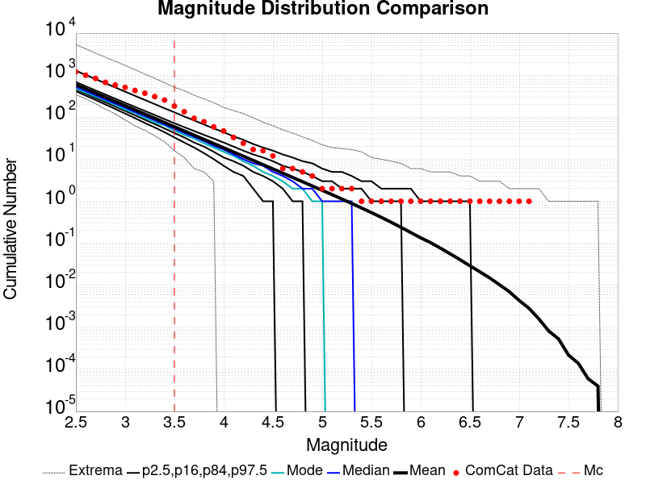 |
| M≥3.5 | M≥4 | M≥5 | M≥6 | M≥7 | M≥8 |
|---|---|---|---|---|---|
 |  |  |  |  | 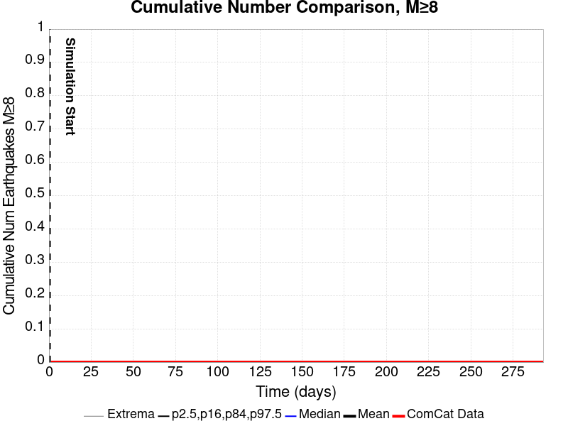 |

| 1 Day | 1 Week | 1 Month | Current (78.2 Day) | |
|---|---|---|---|---|
| M≥3.5 |  |  |  | |
| M≥4 |  | 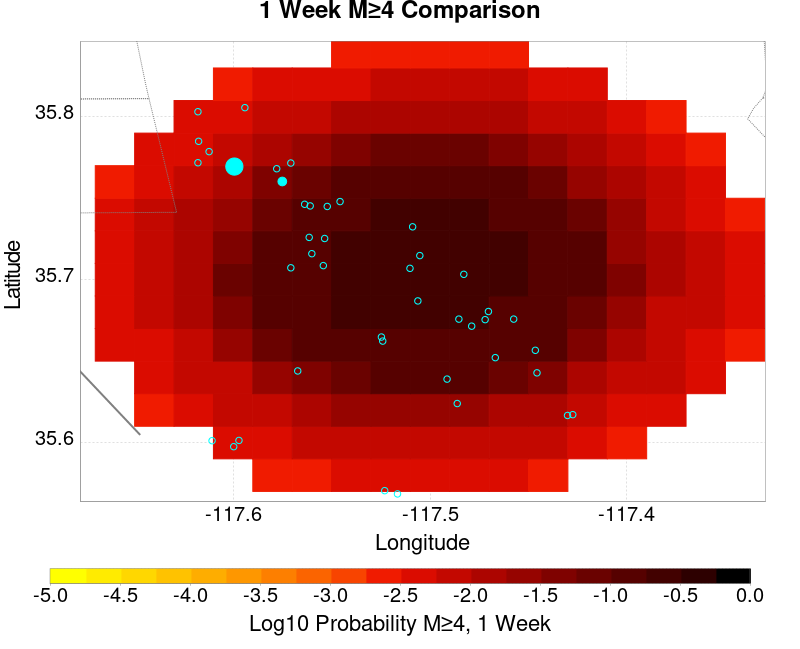 |  |  |
| M≥5 |  |  |  | 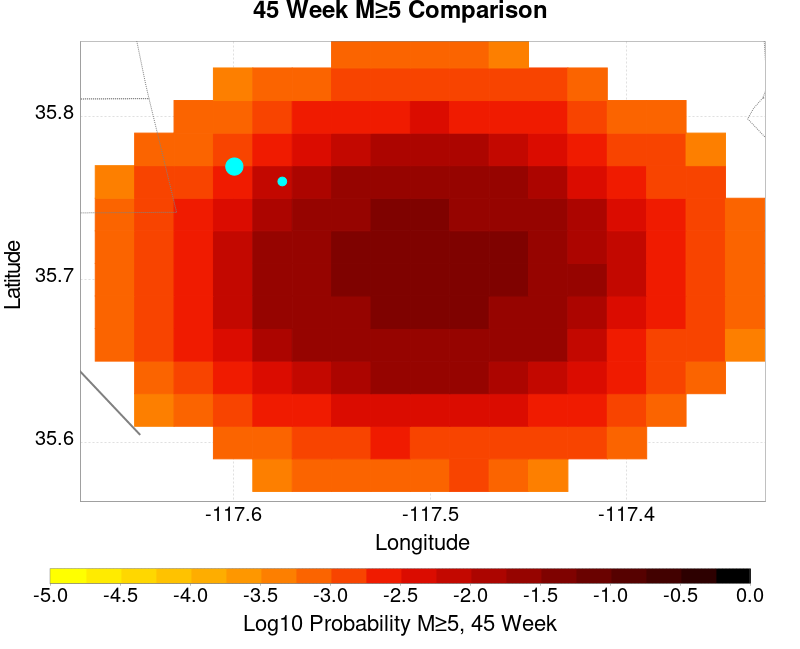 |
| M≥6 |  |  |  |  |
| M≥7 |  |  |  | 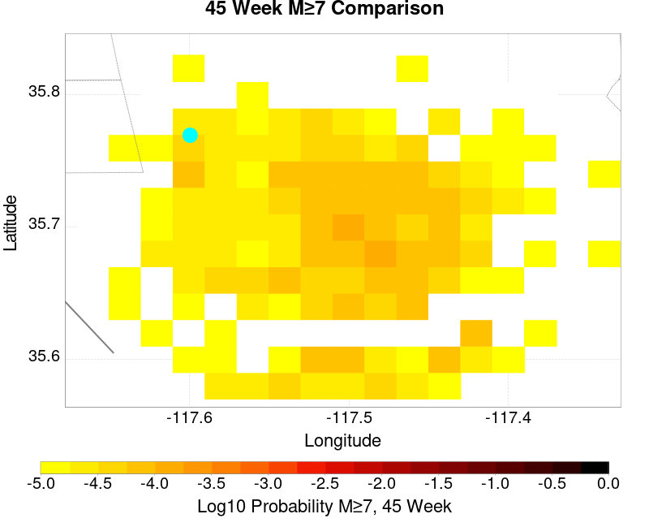 |
| M≥8 |  |  |  |  |
| 1 Day | 1 Week | 1 Month | Current (78.2 Day) | |
|---|---|---|---|---|
| M≥3.5 |  |  |  | 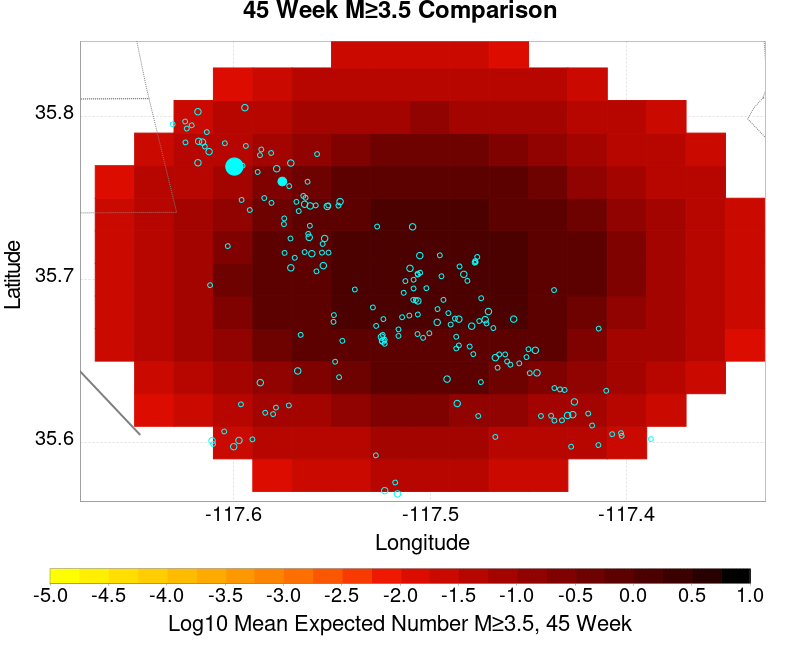 |
| M≥4 |  |  |  |  |
| M≥5 |  | 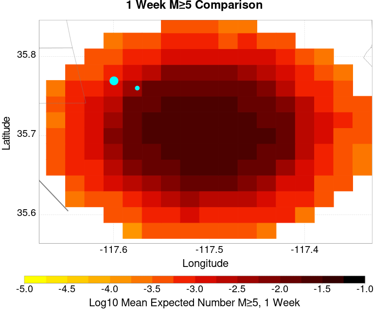 | 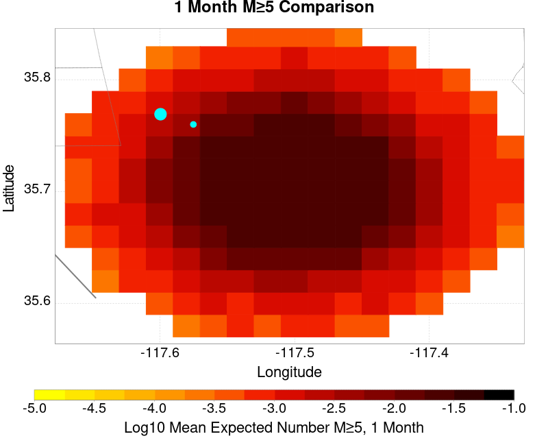 | 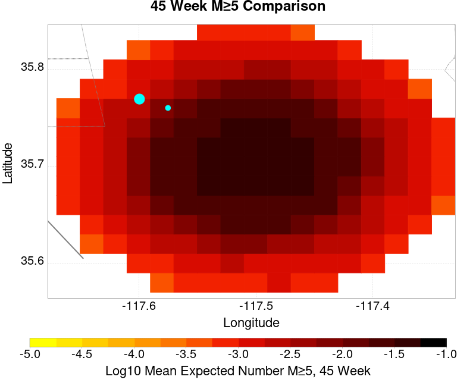 |
| M≥6 |  |  | 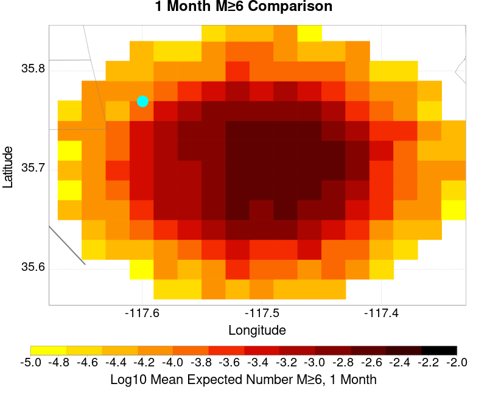 |  |
| M≥7 |  |  |  |  |
| M≥8 |  |  |  | 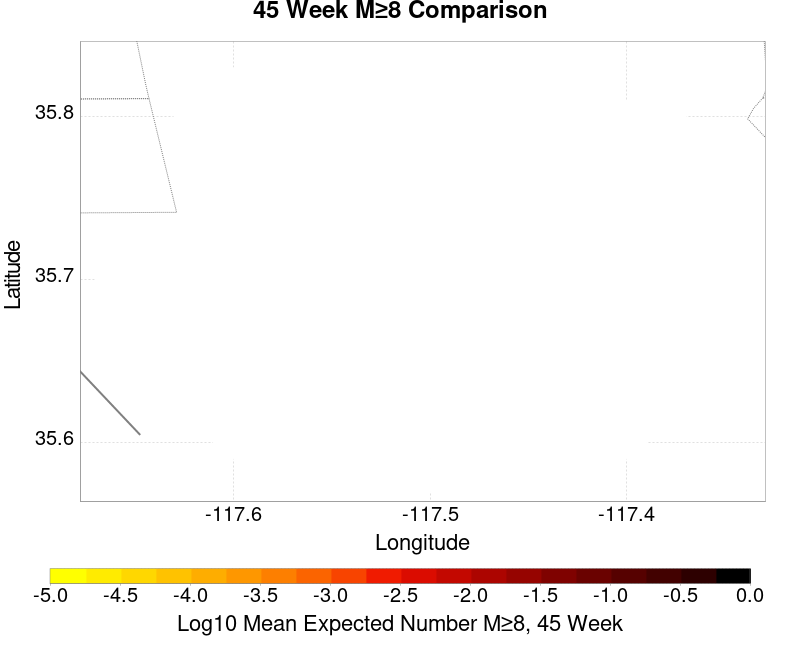 |
| M≥3.5 | M≥4 | M≥5 | M≥6 | M≥7 | M≥8 |
|---|---|---|---|---|---|
 |  |  |  |  |  |
| Min Mag | 1 yr Triggered Ruptures (no spontaneous) | 10 yr Triggered Ruptures (no spontaneous) | 10 yr Triggered Ruptures (primary aftershocks only) |
|---|---|---|---|
| All Supra. Seis. |  | 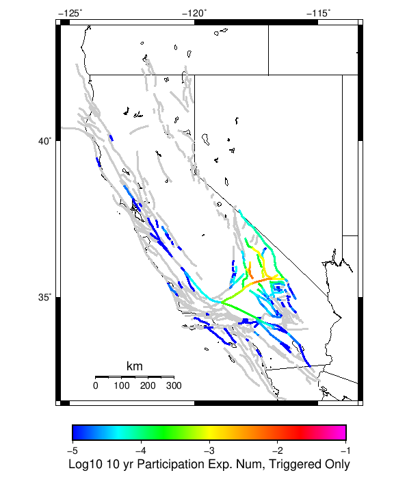 |  |
| M≥6.5 |  |  |  |
| M≥7 |  |  |  |
| M≥7.5 |  |  |  |
First 10 of 52 with matching ruptures shown
| Parent Name | Triggered 10 Year Mean Count | Triggered 1 Day Prob | Triggered 1 Week Prob | Triggered 1 Month Prob | Triggered 1 Year Prob | Triggered 10 Year Prob | Triggered 10 Year Primary Mean Count |
|---|---|---|---|---|---|---|---|
| Garlock (Central) | 0.008055556 | 0.0017592593 | 0.0028703704 | 0.003611111 | 0.0052777776 | 0.007777778 | 0.002175926 |
| Little Lake | 0.006712963 | 0.002361111 | 0.0030092592 | 0.0035648148 | 0.0052777776 | 0.006666667 | 0.0026851853 |
| Airport Lake | 0.004814815 | 0.0018518518 | 0.0024537037 | 0.0030555555 | 0.004027778 | 0.004814815 | 0.002361111 |
| Panamint Valley | 0.002175926 | 4.1666668E-4 | 9.259259E-4 | 0.0010648149 | 0.0016203703 | 0.002175926 | 5.5555557E-4 |
| Tank Canyon | 0.0016203703 | 2.7777778E-4 | 4.6296295E-4 | 7.4074074E-4 | 0.0012037037 | 0.0016203703 | 5.5555557E-4 |
| Owl Lake | 0.0013888889 | 1.3888889E-4 | 3.7037037E-4 | 5.5555557E-4 | 8.7962963E-4 | 0.0013888889 | 2.3148148E-4 |
| Garlock (East) | 0.00125 | 3.2407406E-4 | 4.6296295E-4 | 6.0185185E-4 | 8.3333335E-4 | 0.00125 | 5.0925923E-4 |
| Garlock (West) | 8.7962963E-4 | 1.3888889E-4 | 1.8518518E-4 | 3.7037037E-4 | 5.0925923E-4 | 8.7962963E-4 | 3.2407406E-4 |
| Hunter Mountain-Saline Valley | 8.3333335E-4 | 9.259259E-5 | 3.2407406E-4 | 4.1666668E-4 | 6.481481E-4 | 8.3333335E-4 | 1.3888889E-4 |
| Ash Hill | 5.0925923E-4 | 9.259259E-5 | 1.3888889E-4 | 2.7777778E-4 | 3.7037037E-4 | 5.0925923E-4 | 1.3888889E-4 |
First 10 of 44 with matching ruptures shown
| Parent Name | Triggered 10 Year Mean Count | Triggered 1 Day Prob | Triggered 1 Week Prob | Triggered 1 Month Prob | Triggered 1 Year Prob | Triggered 10 Year Prob | Triggered 10 Year Primary Mean Count |
|---|---|---|---|---|---|---|---|
| Airport Lake | 0.004212963 | 0.001712963 | 0.0022685186 | 0.0026851853 | 0.0035648148 | 0.004212963 | 0.0021296297 |
| Garlock (Central) | 0.0038425927 | 8.7962963E-4 | 0.0015277778 | 0.0019444445 | 0.0026388888 | 0.0037962962 | 0.0012037037 |
| Little Lake | 0.0038425927 | 0.0014351852 | 0.0017592593 | 0.0022222223 | 0.0030092592 | 0.0038425927 | 0.0015277778 |
| Panamint Valley | 0.0020833334 | 4.1666668E-4 | 9.259259E-4 | 0.0010648149 | 0.001574074 | 0.0020833334 | 5.5555557E-4 |
| Garlock (East) | 0.0012037037 | 2.7777778E-4 | 4.1666668E-4 | 5.5555557E-4 | 7.87037E-4 | 0.0012037037 | 5.0925923E-4 |
| Owl Lake | 0.0011574074 | 1.3888889E-4 | 3.7037037E-4 | 5.0925923E-4 | 7.87037E-4 | 0.0011574074 | 2.3148148E-4 |
| Hunter Mountain-Saline Valley | 8.3333335E-4 | 9.259259E-5 | 3.2407406E-4 | 4.1666668E-4 | 6.481481E-4 | 8.3333335E-4 | 1.3888889E-4 |
| Garlock (West) | 7.87037E-4 | 1.3888889E-4 | 1.8518518E-4 | 3.2407406E-4 | 4.6296295E-4 | 7.87037E-4 | 2.7777778E-4 |
| Tank Canyon | 5.5555557E-4 | 1.3888889E-4 | 1.8518518E-4 | 2.3148148E-4 | 4.6296295E-4 | 5.5555557E-4 | 2.3148148E-4 |
| San Andreas (Mojave N) | 4.1666668E-4 | 9.259259E-5 | 1.3888889E-4 | 2.3148148E-4 | 3.2407406E-4 | 4.1666668E-4 | 2.3148148E-4 |
First 10 of 31 with matching ruptures shown
| Parent Name | Triggered 10 Year Mean Count | Triggered 1 Day Prob | Triggered 1 Week Prob | Triggered 1 Month Prob | Triggered 1 Year Prob | Triggered 10 Year Prob | Triggered 10 Year Primary Mean Count |
|---|---|---|---|---|---|---|---|
| Garlock (Central) | 0.003611111 | 7.4074074E-4 | 0.0013888889 | 0.0018055555 | 0.0024074074 | 0.0035648148 | 0.0011111111 |
| Panamint Valley | 0.0014351852 | 2.3148148E-4 | 6.0185185E-4 | 7.4074074E-4 | 0.0010648149 | 0.0014351852 | 3.7037037E-4 |
| Little Lake | 0.0013425926 | 6.481481E-4 | 6.9444446E-4 | 7.87037E-4 | 0.0011111111 | 0.0013425926 | 5.5555557E-4 |
| Airport Lake | 0.0012962963 | 6.0185185E-4 | 6.481481E-4 | 7.4074074E-4 | 0.0010648149 | 0.0012962963 | 5.5555557E-4 |
| Garlock (East) | 0.0012037037 | 2.7777778E-4 | 4.1666668E-4 | 5.5555557E-4 | 7.87037E-4 | 0.0012037037 | 5.0925923E-4 |
| Owl Lake | 0.0010648149 | 1.3888889E-4 | 3.7037037E-4 | 5.0925923E-4 | 7.4074074E-4 | 0.0010648149 | 2.3148148E-4 |
| Hunter Mountain-Saline Valley | 8.3333335E-4 | 9.259259E-5 | 3.2407406E-4 | 4.1666668E-4 | 6.481481E-4 | 8.3333335E-4 | 1.3888889E-4 |
| Garlock (West) | 7.87037E-4 | 1.3888889E-4 | 1.8518518E-4 | 3.2407406E-4 | 4.6296295E-4 | 7.87037E-4 | 2.7777778E-4 |
| San Andreas (Mojave N) | 4.1666668E-4 | 9.259259E-5 | 1.3888889E-4 | 2.3148148E-4 | 3.2407406E-4 | 4.1666668E-4 | 2.3148148E-4 |
| San Andreas (Mojave S) | 3.7037037E-4 | 9.259259E-5 | 1.3888889E-4 | 2.3148148E-4 | 2.7777778E-4 | 3.7037037E-4 | 2.3148148E-4 |
First 10 of 21 with matching ruptures shown
| Parent Name | Triggered 10 Year Mean Count | Triggered 1 Day Prob | Triggered 1 Week Prob | Triggered 1 Month Prob | Triggered 1 Year Prob | Triggered 10 Year Prob | Triggered 10 Year Primary Mean Count |
|---|---|---|---|---|---|---|---|
| Garlock (Central) | 0.0014814815 | 1.8518518E-4 | 4.1666668E-4 | 6.481481E-4 | 9.7222225E-4 | 0.0014814815 | 4.1666668E-4 |
| Hunter Mountain-Saline Valley | 8.3333335E-4 | 9.259259E-5 | 3.2407406E-4 | 4.1666668E-4 | 6.481481E-4 | 8.3333335E-4 | 1.3888889E-4 |
| Panamint Valley | 8.3333335E-4 | 9.259259E-5 | 3.2407406E-4 | 4.1666668E-4 | 6.481481E-4 | 8.3333335E-4 | 1.3888889E-4 |
| Garlock (West) | 7.4074074E-4 | 9.259259E-5 | 1.3888889E-4 | 2.7777778E-4 | 4.1666668E-4 | 7.4074074E-4 | 2.7777778E-4 |
| Garlock (East) | 4.6296295E-4 | 4.6296296E-5 | 9.259259E-5 | 1.8518518E-4 | 3.2407406E-4 | 4.6296295E-4 | 1.8518518E-4 |
| San Andreas (Mojave N) | 4.1666668E-4 | 9.259259E-5 | 1.3888889E-4 | 2.3148148E-4 | 3.2407406E-4 | 4.1666668E-4 | 2.3148148E-4 |
| San Andreas (Mojave S) | 3.7037037E-4 | 9.259259E-5 | 1.3888889E-4 | 2.3148148E-4 | 2.7777778E-4 | 3.7037037E-4 | 2.3148148E-4 |
| San Andreas (San Bernardino N) | 2.3148148E-4 | 4.6296296E-5 | 4.6296296E-5 | 9.259259E-5 | 1.3888889E-4 | 2.3148148E-4 | 1.3888889E-4 |
| Death Valley (Black Mtns Frontal) | 1.8518518E-4 | 1.3888889E-4 | 1.3888889E-4 | 1.3888889E-4 | 1.3888889E-4 | 1.8518518E-4 | 9.259259E-5 |
| Death Valley (No) | 1.8518518E-4 | 1.3888889E-4 | 1.3888889E-4 | 1.3888889E-4 | 1.3888889E-4 | 1.8518518E-4 | 9.259259E-5 |
The first 5 sections (sorted by trigger rate) are plotted below. All fault MPDs are available here
| 1 Week | 1 Month | 1 Year | 10 Year |
|---|---|---|---|
 |  |  |  |
 |  |  |  |
 | 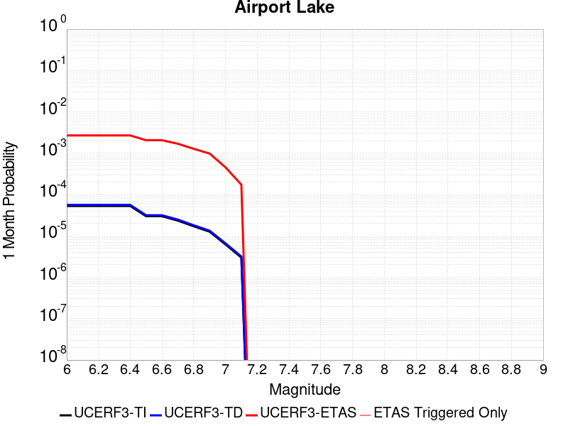 |  |  |
 |  |  |  |
 |  |  | 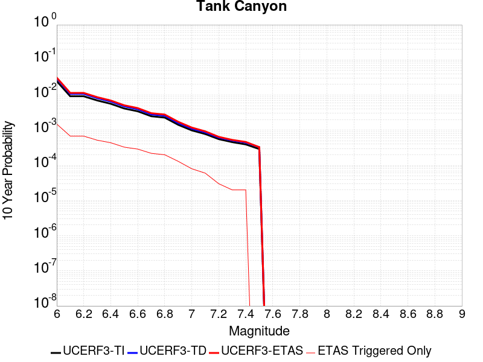 |
| Min Mag | Triggered Ruptures (no spontaneous) | Triggered Ruptures (primary aftershocks only) |
|---|---|---|
| M≥2.5 |  |  |
| M≥5 |  |  |
| M≥6 |  |  |
| M≥7 |  |  |
{
"numSimulations": 100000,
"duration": 10.0,
"startTimeMillis": 1562261630000,
"includeSpontaneous": false,
"randomSeed": 1568924297288,
"binaryOutput": true,
"binaryOutputFilters": [
{
"prefix": "results_complete",
"descendantsOnly": false
},
{
"prefix": "results_m5_preserve_chain",
"minMag": 5.0,
"preserveChainBelowMag": true,
"descendantsOnly": false
}
],
"forceRecalc": false,
"simulationName": "ComCat M6.4 (ci38443183), Point Sources, Impose G-R",
"numRetries": 3,
"outputDir": "${ETAS_SIM_DIR}/2019_09_19-ComCatM6p4_ci38443183_PointSources_ImposeGR",
"triggerRuptures": [
{
"occurrenceTimeMillis": 1562259775340,
"comcatEventID": "ci38443095",
"mag": 3.98,
"latitude": 35.708,
"longitude": -117.5036667,
"depth": 10.58
},
{
"occurrenceTimeMillis": 1562261629000,
"comcatEventID": "ci38443183",
"mag": 6.4,
"latitude": 35.7053333,
"longitude": -117.5038333,
"depth": 10.5
}
],
"cacheDir": "${ETAS_LAUNCHER}/inputs/cache_fm3p1_ba",
"fssFile": "${ETAS_LAUNCHER}/inputs/2013_05_10-ucerf3p3-production-10runs_COMPOUND_SOL_FM3_1_SpatSeisU3_MEAN_BRANCH_AVG_SOL.zip",
"probModel": "FULL_TD",
"applySubSeisForSupraNucl": true,
"totRateScaleFactor": 1.14,
"gridSeisCorr": true,
"timeIndependentERF": false,
"griddedOnly": false,
"imposeGR": true,
"includeIndirectTriggering": true,
"gridSeisDiscr": 0.1,
"catalogCompletenessModel": "RELAXED",
"configCommand": "u3etas_comcat_event_config_builder.sh --event-id ci38443183 --num-simulations 100000 --days-before 7 --impose-gr --mag-complete 3.5 --hpc-site USC_HPC --nodes 36 --hours 24 --queue scec",
"configTime": 1568924297288,
"comcatMetadata": {
"region": {
"centerLatitude": 35.7053333,
"centerLongitude": -117.5038333,
"radius": 15.703628043335499
},
"eventID": "ci38443183",
"minDepth": -10.0,
"maxDepth": 24.0,
"minMag": 2.5,
"startTime": 1561656829000,
"endTime": 1562261629001,
"magComplete": 3.5
}
}